A3_flowkit · Fable 5.2 · attempt vThmmwp
Batch fb2 · job fb2_A_EXP23000352_09_Mar_2023_flowkit_claude-fable-5-2 · trial A_EXP23000352_09_Mar_2023_flowki__vThmmwp. Long tool outputs are cut at 6,000 characters.
Score
0.30
0.30
Minutes
17.6
17.6
Agent cost
$5.44
$5.44
Steps
148
148
Screenshots / images
19
19
2
tool call · Bash
cd /task; ls inputs | head; ls inputs/raw | wc -l; cat inputs/gating_strategy.md; head -5 inputs/plate_layout.csv; ls -la outputs; ls /root/.claude/projects/-task/memory/ 2>/dev/null
3
tool output
gating_strategy.md plate_layout.csv raw 42 # Gating strategy: plate 230306 (AAV serotype panel, iPSC-derived neurons) - Sequence: Cells -> Singlets -> Live -> GFP_pos. - One gate tree, applied identically to all 42 wells. - Uncompensated data. No compensation was used. - NCAM (VL1-A) is not gated. ## Gates | Population | Parent | Axes (x vs y) | Scientist's gate shape | Accepted FlowKit gates | |---|---|---|---|---| | Cells | all events | FSC-A vs SSC-A | polygon | PolygonGate | | Singlets | Cells | SSC-H vs SSC-A | polygon | PolygonGate | | Live | Singlets | RL3-A (Zombie NIR) vs SSC-A | rectangle | RectangleGate on RL3-A x SSC-A, or a 1-D RectangleGate on RL3-A | | GFP_pos | Live | BL1-A (GFP) vs SSC-A | rectangle | RectangleGate on BL1-A x SSC-A, or a 1-D RectangleGate on BL1-A | ## Gate descriptions - **Cells:** polygon around the main cell cloud. It excludes low-FSC-A / low-SSC-A debris and events piled at the scale maximum. - **Singlets:** narrow polygon along the diagonal of SSC-H vs SSC-A. It excludes events whose SSC-A is too high for their SSC-H (doublets and aggregates). - **Live:** - The rectangle's RL3-A range runs from the lowest values up to the Zombie NIR cut-off. Its SSC-A range spans almost the whole axis. - The RL3-A upper edge is the boundary that matters. - **GFP_pos:** - The rectangle runs from the GFP cut-off to the top of the BL1-A axis, with a wide SSC-A range. - The BL1-A lower edge is the boundary that matters. ## Choosing the fluorescence cut-offs (guidance, not a record of the scientist's choice) The notebook does not record how the Live and GFP cut-offs were chosen, and the plate has no unstained, single-stain or untransduced well. - **Live:** on Singlets, put the RL3-A cut-off in the valley between the Zombie NIR-dim (live) and Zombie NIR-bright (dead) populations. Check that the valley sits in the same place across wells. - **GFP_pos:** - Put the BL1-A cut-off just above the upper edge of the GFP-negative Live population. - Judge that edge on the wells with the fewest GFP-bright events. - Apply the same cut-off to every well. ## FlowKit notes - A 1-D RectangleGate with only a maximum (or only a minimum) selects events below (or above) the cut-off. - Draw fluorescence gates on a logicle axis (`flowkit.transforms.LogicleTransform`) so the negative populations are visible, or give raw-unit bounds. - A population's events are those inside its own gate and all its ancestor gates (nest each gate under its parent). file,well,dose_vg_per_cell,replicate,is_control,control_type Serotype panel_2_Rep2_Group_A1.fcs,A1,5000,1,false,none Serotype panel_2_Rep2_Group_A2.fcs,A2,5000,2,false,none Serotype panel_2_Rep2_Group_A3.fcs,A3,10000,1,false,none Serotype panel_2_Rep2_Group_A4.fcs,A4,10000,2,false,none total 8 drwxr-xr-x 2 root root 4096 Nov 10 17:00 . drwxr-xr-x 4 root root 4096 Nov 10 17:00 ..
4
tool call · Bash
cd /task; mkdir -p work; cat inputs/plate_layout.csv | column -s, -t | head -50; cat > work/meta.py <<'EOF'
import flowio, glob, os, sys
import numpy as np
fs = sorted(glob.glob('/task/inputs/raw/*.fcs'))
fd = flowio.FlowData(fs[0])
t = fd.text
for k in sorted(t):
v = t[k]
if len(str(v))<200: print(k, '=', v)
EOF
python3 -I work/meta.py5
tool output
/bin/bash: line 11: column: command not found #coincidentcount = 172519 #flowrate = 200 #laser1asf = 1.07 #laser1color = Blue #laser1delay = 1100 #laser2asf = 1.09 #laser2color = Red #laser2delay = 1496 #laser3asf = 0.88 #laser3color = Violet #laser3delay = 718 #laser4asf = 0.99 #laser4color = Yellow #laser4delay = 306 #laserconfig = BRV6Y #p10label = Zombie NIR #p10target = LiveDead #p11label = NCAM #p11target = BV421 #p14label = GFP #p14target = AAV-GFP #p15label = Zombie NIR #p15target = LiveDead #p16label = NCAM #p16target = BV421 #p1label = NA #p1target = NA #p4label = GFP #p4target = AAV-GFP #p5label = Zombie NIR #p5target = LiveDead #p6label = NCAM #p6target = BV421 #p9label = GFP #p9target = AAV-GFP #ptdate = 06-Mar-2023 #ptresult = Pass #tr1 = OR_FSC,25000 #widththreshold = 1000 #winext = 0 beginanalysis = 000000000000 begindata = 000000008192 beginstext = 000000000000 btim = 09:28:23 byteord = 1,2,3,4 cells = NA com = NA cyt = 0A29009 Attune NxT Acoustic Focusing Cytometer (Lasers: BRV6Y) cytsn = 2AFC228071019 datatype = F date = 06-Mar-2023 endanalysis = 000000000000 enddata = 000062646655 endstext = 000000000000 etim = 09:29:09 exp = NA fil = A1.fcs hostid = SEA11065ATTUNE inst = NA lost = 0 mode = L nextdata = 000000000000 op = Jeff Huang originality = Original p10b = 32 p10e = 0,0 p10f = NA p10l = 640 p10n = RL3-H p10r = 1048576 p10s = LiveDead-Zombie NIR-H p10v = 300 p11b = 32 p11e = 0,0 p11f = NA p11l = 405 p11n = VL1-H p11r = 1048576 p11s = BV421-NCAM-H p11v = 300 p12b = 32 p12e = 0,0 p12f = NA p12l = 488 p12n = FSC-W p12r = 1024 p12s = FSC-W p12v = 30 p13b = 32 p13e = 0,0 p13f = NA p13l = 488 p13n = SSC-W p13r = 1024 p13s = SSC-W p13v = 300 p14b = 32 p14e = 0,0 p14f = NA p14l = 488 p14n = BL1-W p14r = 1024 p14s = AAV-GFP-GFP-W p14v = 250 p15b = 32 p15e = 0,0 p15f = NA p15l = 640 p15n = RL3-W p15r = 1024 p15s = LiveDead-Zombie NIR-W p15v = 300 p16b = 32 p16e = 0,0 p16f = NA p16l = 405 p16n = VL1-W p16r = 1024 p16s = BV421-NCAM-W p16v = 300 p1b = 32 p1e = 0,0 p1f = NA p1l = NA p1n = Time p1r = 67108864 p1s = Time p1v = NA p2b = 32 p2e = 0,0 p2f = NA p2l = 488 p2n = FSC-A p2r = 1048576 p2s = FSC-A p2v = 30 p3b = 32 p3e = 0,0 p3f = NA p3l = 488 p3n = SSC-A p3r = 1048576 p3s = SSC-A p3v = 300 p4b = 32 p4e = 0,0 p4f = NA p4l = 488 p4n = BL1-A p4r = 1048576 p4s = AAV-GFP-GFP-A p4v = 250 p5b = 32 p5e = 0,0 p5f = NA p5l = 640 p5n = RL3-A p5r = 1048576 p5s = LiveDead-Zombie NIR-A p5v = 300 p6b = 32 p6e = 0,0 p6f = NA p6l = 405 p6n = VL1-A p6r = 1048576 p6s = BV421-NCAM-A p6v = 300 p7b = 32 p7e = 0,0 p7f = NA p7l = 488 p7n = FSC-H p7r = 1048576 p7s = FSC-H p7v = 30 p8b = 32 p8e = 0,0 p8f = NA p8l = 488 p8n = SSC-H p8r = 1048576 p8s = SSC-H p8v = 300 p9b = 32 p9e = 0,0 p9f = NA p9l = 488 p9n = BL1-H p9r = 1048576 p9s = AAV-GFP-GFP-H p9v = 250 par = 16 plateid = NA platename = Serotype panel_2 proj = Rep2 smno = Group src = NA sys = SEA11065ATTUNE Microsoft Windows 10 Enterprise LTSC timestep = 0.001 tot = 978726 vol = 155000 wellid = A1
7
tool call · Bash
cd /task; cat inputs/plate_layout.csv | tr ',' '\t' | cut -f2- ; cat > work/meta2.py <<'EOF'
import flowio, glob, os, sys, re
import numpy as np, pandas as pd
lay = pd.read_csv('/task/inputs/plate_layout.csv')
rows=[]
ref=None
for f in lay.file:
fd = flowio.FlowData('/task/inputs/raw/'+f)
t = fd.text
d = {'well':t.get('wellid'),'tot':t['tot'],'vol':t.get('vol'),'btim':t.get('btim'),'etim':t.get('etim'),'date':t.get('date'),'flow':t.get('#flowrate'),'coinc':t.get('#coincidentcount'),'fil':t.get('fil'),
'tr':t.get('#tr1'),'wth':t.get('#widththreshold')}
pn = {i:(t[f'p{i}n'],t[f'p{i}s'],t.get(f'p{i}v'),t.get(f'p{i}r')) for i in range(1,int(t['par'])+1)}
d['pn']=str(pn)
rows.append(d)
keys = {k:v for k,v in t.items() if k not in ('tot','vol','btim','etim','#coincidentcount','fil','wellid','enddata','begindata')}
if ref is None: ref=keys
else:
diff = {k:(ref.get(k),keys.get(k)) for k in set(ref)|set(keys) if ref.get(k)!=keys.get(k)}
if diff: print(f, diff)
df=pd.DataFrame(rows)
print(df.drop(columns='pn').to_string())
print(df.pn.nunique())
EOF
python3 -I work/meta2.py8
tool output
well dose_vg_per_cell replicate is_control control_type
A1 5000 1 false none
A2 5000 2 false none
A3 10000 1 false none
A4 10000 2 false none
A5 50000 1 false none
A6 50000 2 false none
A7 5000 1 false none
A8 5000 2 false none
A9 10000 1 false none
A10 10000 2 false none
A11 50000 1 false none
A12 50000 2 false none
B1 5000 1 false none
B2 5000 2 false none
B3 10000 1 false none
B4 10000 2 false none
B5 50000 1 false none
B6 50000 2 false none
B7 5000 1 false none
B8 5000 2 false none
B9 10000 1 false none
B10 10000 2 false none
B11 50000 1 false none
B12 50000 2 false none
C1 5000 1 false none
C2 5000 2 false none
C3 10000 1 false none
C4 10000 2 false none
C5 50000 1 false none
C6 50000 2 false none
C7 5000 1 false none
C8 5000 2 false none
C9 10000 1 false none
C10 10000 2 false none
C11 50000 1 false none
C12 50000 2 false none
D1 5000 1 false none
D2 5000 2 false none
D3 10000 1 false none
D4 10000 2 false none
D5 50000 1 false none
D6 50000 2 false none
Serotype panel_2_Rep2_Group_A2.fcs {'#flowrate': ('200', '100')}
Serotype panel_2_Rep2_Group_A3.fcs {'#flowrate': ('200', '100')}
Serotype panel_2_Rep2_Group_A4.fcs {'#flowrate': ('200', '100')}
Serotype panel_2_Rep2_Group_A5.fcs {'#flowrate': ('200', '100')}
Serotype panel_2_Rep2_Group_A6.fcs {'#flowrate': ('200', '100')}
Serotype panel_2_Rep2_Group_A7.fcs {'#flowrate': ('200', '100')}
Serotype panel_2_Rep2_Group_A8.fcs {'#flowrate': ('200', '100')}
Serotype panel_2_Rep2_Group_A9.fcs {'#flowrate': ('200', '100')}
Serotype panel_2_Rep2_Group_A10.fcs {'#flowrate': ('200', '100')}
Serotype panel_2_Rep2_Group_A11.fcs {'#flowrate': ('200', '100')}
Serotype panel_2_Rep2_Group_A12.fcs {'#flowrate': ('200', '100')}
Serotype panel_2_Rep2_Group_B1.fcs {'#flowrate': ('200', '100')}
Serotype panel_2_Rep2_Group_B2.fcs {'#flowrate': ('200', '100')}
Serotype panel_2_Rep2_Group_B3.fcs {'#flowrate': ('200', '100')}
Serotype panel_2_Rep2_Group_B4.fcs {'#flowrate': ('200', '100')}
Serotype panel_2_Rep2_Group_B5.fcs {'#flowrate': ('200', '100')}
Serotype panel_2_Rep2_Group_B6.fcs {'#flowrate': ('200', '100')}
Serotype panel_2_Rep2_Group_B7.fcs {'#flowrate': ('200', '100')}
Serotype panel_2_Rep2_Group_B8.fcs {'#flowrate': ('200', '100')}
Serotype panel_2_Rep2_Group_B9.fcs {'#flowrate': ('200', '100')}
Serotype panel_2_Rep2_Group_B10.fcs {'#flowrate': ('200', '100')}
Serotype panel_2_Rep2_Group_B11.fcs {'#flowrate': ('200', '100')}
Serotype panel_2_Rep2_Group_B12.fcs {'#flowrate': ('200', '100')}
Serotype panel_2_Rep2_Group_C1.fcs {'#flowrate': ('200', '100')}
Serotype panel_2_Rep2_Group_C2.fcs {'#flowrate': ('200', '100')}
Serotype panel_2_Rep2_Group_C3.fcs {'#flowrate': ('200', '100')}
Serotype panel_2_Rep2_Group_C4.fcs {'#flowrate': ('200', '100')}
Serotype panel_2_Rep2_Group_C5.fcs {'#flowrate': ('200', '100')}
Serotype panel_2_Rep2_Group_C6.fcs {'#flowrate': ('200', '100')}
Serotype panel_2_Rep2_Group_C7.fcs {'#flowrate': ('200', '100')}
Serotype panel_2_Rep2_Group_C8.fcs {'#flowrate': ('200', '100')}
Serotype panel_2_Rep2_Group_C9.fcs {'#flowrate': ('200', '100')}
Serotype panel_2_Rep2_Group_C10.fcs {'#flowrate': ('200', '100')}
Serotype panel_2_Rep2_Group_C11.fcs {'#flowrate': ('200', '100')}
Serotype panel_2_Rep2_Group_C12.fcs {'#flowrate': ('200', '100')}
Serotype panel_2_Rep2_Group_D1.fcs {'#flowrate': ('200', '100')}
Serotype panel_2_Rep2_Group_D2.fcs {'#flowrate': ('200', '100')}
Serotype panel_2_Rep2_Group_D3.fcs {'#flowrate': ('200', '100')}
Serotype panel_2_Rep2_Group_D4.fcs {'#flowrate': ('200', '100')}
Serotype panel_2_Rep2_Group_D5.fcs {'#flowrate': ('200', '100')}
Serotype panel_2_Rep2_Group_D6.fcs {'#flowrate': ('200', '100')}
well tot vol btim etim date flow coinc fil tr wth
0 A1 978726 155000 09:28:23 09:29:09 06-Mar-2023 200 172519 A1.fcs OR_FSC,25000 1000
1 A2 935707 164000 09:29:39 09:31:17 06-Mar-2023 100 96386 A2.fcs OR_FSC,25000 1000
2 A3 925910 163000 09:31:46 09:33:24 06-Mar-2023 100 90279 A3.fcs OR_FSC,25000 1000
3 A4 892332 163000 09:33:53 09:35:31 06-Mar-2023 100 89020 A4.fcs OR_FSC,25000 1000
4 A5 986514 164000 09:36:00 09:37:39 06-Mar-2023 100 104344 A5.fcs OR_FSC,25000 1000
5 A6 755396 162000 09:38:09 09:39:46 06-Mar-2023 100 61627 A6.fcs OR_FSC,25000 1000
6 A7 848859 164000 09:40:14 09:41:53 06-Mar-2023 100 81744 A7.fcs OR_FSC,25000 1000
7 A8 710140 164000 09:42:21 09:44:00 06-Mar-2023 100 56510 A8.fcs OR_FSC,25000 1000
8 A9 958681 164000 09:44:28 09:46:06 06-Mar-2023 100 108852 A9.fcs OR_FSC,25000 1000
9 A10 870505 163000 09:46:35 09:48:14 06-Mar-2023 100 86870 A10.fcs OR_FSC,25000 1000
10 A11 844586 164000 09:48:42 09:50:21 06-Mar-2023 100 74178 A11.fcs OR_FSC,25000 1000
11 A12 947510 164000 09:50:50 09:52:28 06-Mar-2023 100 94783 A12.fcs OR_FSC,25000 1000
12 B1 733754 164000 09:52:57 09:54:36 06-Mar-2023 100 64948 B1.fcs OR_FSC,25000 1000
13 B2 728886 164000 09:55:04 09:56:43 06-Mar-2023 100 64652 B2.fcs OR_FSC,25000 1000
14 B3 667298 164000 09:57:11 09:58:50 06-Mar-2023 100 50572 B3.fcs OR_FSC,25000 1000
15 B4 598212 164000 09:59:18 10:00:56 06-Mar-2023 100 40161 B4.fcs OR_FSC,25000 1000
16 B5 837561 164000 10:01:24 10:03:03 06-Mar-2023 100 73351 B5.fcs OR_FSC,25000 1000
17 B6 877336 164000 10:03:31 10:05:10 06-Mar-2023 100 79492 B6.fcs OR_FSC,25000 1000
18 B7 954909 164000 10:05:38 10:07:17 06-Mar-2023 100 97979 B7.fcs OR_FSC,25000 1000
19 B8 918778 163000 10:07:46 10:09:24 06-Mar-2023 100 91516 B8.fcs OR_FSC,25000 1000
20 B9 862070 164000 10:09:53 10:11:32 06-Mar-2023 100 79481 B9.fcs OR_FSC,25000 1000
21 B10 1083648 163000 10:12:00 10:13:39 06-Mar-2023 100 119109 B10.fcs OR_FSC,25000 1000
22 B11 988574 164000 10:14:08 10:15:47 06-Ma
… [1,950 more characters not shown]10
tool call · Bash
cd /task; free -g | head -2; nproc; cat > work/cache.py <<'EOF'
import flowkit as fk, numpy as np, pandas as pd, os
lay = pd.read_csv('/task/inputs/plate_layout.csv')
os.makedirs('/task/work/npy', exist_ok=True)
for f,w in zip(lay.file, lay.well):
s = fk.Sample('/task/inputs/raw/'+f, ignore_offset_error=True)
e = s.get_events('raw')
if w=='A1': print(s.pnn_labels, e.shape, e.dtype)
np.save(f'/task/work/npy/{w}.npy', e.astype(np.float32))
EOF
python3 -I work/cache.py11
tool output
/bin/bash: line 11: free: command not found 4 ['Time', 'FSC-A', 'SSC-A', 'BL1-A', 'RL3-A', 'VL1-A', 'FSC-H', 'SSC-H', 'BL1-H', 'RL3-H', 'VL1-H', 'FSC-W', 'SSC-W', 'BL1-W', 'RL3-W', 'VL1-W'] (978726, 16) float64
12
tool call · Bash
cd /task; cat > work/qc1.py <<'EOF'
import numpy as np, pandas as pd
lay = pd.read_csv('/task/inputs/plate_layout.csv')
cols=['Time', 'FSC-A', 'SSC-A', 'BL1-A', 'RL3-A', 'VL1-A', 'FSC-H', 'SSC-H', 'BL1-H', 'RL3-H', 'VL1-H', 'FSC-W', 'SSC-W', 'BL1-W', 'RL3-W', 'VL1-W']
rows=[]
for w in lay.well:
e=np.load(f'work/npy/{w}.npy')
d={'well':w,'n':len(e),'tmin':e[:,0].min(),'tmax':e[:,0].max(), 'mono':(np.diff(e[:,0])<0).sum()}
for c in ['FSC-A','SSC-A','BL1-A','RL3-A','VL1-A','FSC-H','SSC-H','BL1-H']:
x=e[:,cols.index(c)]
d[c+'_max']=x.max(); d[c+'_pmax']=100*(x>=1048575*0.999).mean(); d[c+'_med']=np.median(x); d[c+'_min']=x.min()
rows.append(d)
df=pd.DataFrame(rows)
pd.set_option('display.width',300)
print(df[['well','n','tmin','tmax','mono']+[c for c in df if c.endswith('_pmax')]].round(3).to_string())
print(df[['well']+[c for c in df if c.endswith('_med')]].round(0).to_string())
print(df[['well']+[c for c in df if c.endswith('_max') and not c.endswith('pmax')]].round(0).to_string())
print(df[['well']+[c for c in df if c.endswith('_min')]].round(0).to_string())
EOF
python3 -I work/qc1.py13
tool output
well n tmin tmax mono FSC-A_pmax SSC-A_pmax BL1-A_pmax RL3-A_pmax VL1-A_pmax FSC-H_pmax SSC-H_pmax BL1-H_pmax 0 A1 978726 0.014 46.250000 0 0.190 1.178 0.001 0.000 0.000 0.0 0.026 0.000 1 A2 935707 0.014 97.948997 0 0.072 0.502 0.002 0.000 0.000 0.0 0.013 0.001 2 A3 925910 0.014 97.657997 0 0.048 0.468 0.002 0.000 0.000 0.0 0.011 0.001 3 A4 892332 0.014 97.737999 0 0.076 0.532 0.007 0.000 0.000 0.0 0.017 0.003 4 A5 986514 0.014 97.871002 0 0.075 0.615 0.010 0.000 0.000 0.0 0.021 0.005 5 A6 755396 0.014 97.106003 0 0.032 0.350 0.011 0.000 0.000 0.0 0.013 0.006 6 A7 848859 0.014 97.918999 0 0.090 0.536 0.003 0.000 0.000 0.0 0.009 0.001 7 A8 710140 0.014 97.939003 0 0.068 0.443 0.005 0.000 0.001 0.0 0.012 0.002 8 A9 958681 0.014 97.820999 0 0.320 1.087 0.002 0.000 0.000 0.0 0.030 0.001 9 A10 870505 0.014 97.698997 0 0.138 0.634 0.003 0.000 0.000 0.0 0.020 0.001 10 A11 844586 0.014 97.924004 0 0.043 0.380 0.008 0.000 0.000 0.0 0.015 0.004 11 A12 947510 0.014 97.898003 0 0.094 0.548 0.011 0.000 0.000 0.0 0.021 0.006 12 B1 733754 0.014 97.936996 0 0.107 0.477 0.000 0.000 0.000 0.0 0.011 0.000 13 B2 728886 0.014 97.866997 0 0.133 0.534 0.000 0.000 0.000 0.0 0.011 0.000 14 B3 667298 0.014 97.940002 0 0.065 0.352 0.000 0.000 0.000 0.0 0.010 0.000 15 B4 598212 0.014 97.862000 0 0.045 0.316 0.000 0.000 0.000 0.0 0.011 0.000 16 B5 837561 0.014 97.904999 0 0.045 0.412 0.000 0.000 0.000 0.0 0.007 0.000 17 B6 877336 0.014 97.835999 0 0.052 0.476 0.000 0.000 0.000 0.0 0.011 0.000 18 B7 954909 0.014 97.900002 0 0.119 0.562 0.000 0.001 0.000 0.0 0.010 0.000 19 B8 918778 0.013 97.750999 0 0.043 0.375 0.000 0.000 0.000 0.0 0.004 0.000 20 B9 862070 0.014 97.961998 0 0.055 0.401 0.000 0.000 0.000 0.0 0.008 0.000 21 B10 1083648 0.014 97.778999 0 0.065 0.607 0.001 0.000 0.000 0.0 0.013 0.000 22 B11 988574 0.014 97.925003 0 0.035 0.440 0.004 0.000 0.000 0.0 0.009 0.002 23 B12 904103 0.014 97.778999 0 0.029 0.384 0.012 0.000 0.000 0.0 0.010 0.006 24 C1 624718 0.013 97.764999 0 0.005 0.152 0.000 0.000 0.000 0.0 0.003 0.000 25 C2 695572 0.013 97.790001 0 0.010 0.196 0.000 0.000 0.000 0.0 0.006 0.000 26 C3 656321 0.014 97.719002 0 0.040 0.287 0.000 0.000 0.000 0.0 0.009 0.000 27 C4 679504 0.014 97.801003 0 0.012 0.201 0.000 0.000 0.000 0.0 0.005 0.000 28 C5 689593 0.014 97.862000 0 0.008 0.185 0.002 0.001 0.000 0.0 0.006 0.000 29 C6 891011 0.014 97.567001 1 0.015 0.315 0.003 0.000 0.000 0.0 0.007 0.001 30 C7 649735 0.014 97.905998 0 0.014 0.186 0.000 0.001 0.000 0.0 0.008 0.000 31 C8 639518 0.014 97.873001 0 0.009 0.237 0.000 0.000 0.000 0.0 0.008 0.000 32 C9 801299 0.014 97.900002 0 0.041 0.323 0.000 0.000 0.000 0.0 0.012 0.000 33 C10 927162 0.014 97.483002 0 0.041 0.415 0.000 0.000 0.000 0.0 0.013 0.000 34 C11 868685 0.014 97.535004 1 0.038 0.344 0.000 0.000 0.000 0.0 0.015 0.000 35 C12 578214 0.013 97.754997 0 0.021 0.177 0.000 0.000 0.001 0.0 0.012 0.000 36 D1 800840 0.014 97.943001 0 0.020 0.277 0.000 0.000 0.000 0.0 0.006 0.000 37 D2 894591 0.014 97.931999 0 0.028 0.328 0.002 0.000 0.000 0.0 0.006 0.000 38 D3 915097 0.014 97.745003 0 0.074 0.470 0.000 0.000 0.000 0.0 0.010 0.000 39 D4 925805 0.014 97.528000 1 0.043 0.428 0.002 0.000 0.000 0.0 0.009 0.001 40 D5 153195 0.015 97.767998 0 0.002 0.076 0.005 0.000 0.000 0.0 0.005 0.004 41 D6 726651 0.014 97.928001 0 0.006 0.201 0.002 0.000 0.000 0.0 0.006 0.001 well FSC-A_med SSC-A_med BL1-A_med RL3-A_med VL1-A_med FSC-H_med SSC-H_med BL1-H_med 0 A1 129 … [12,274 more characters not shown]
15
thinking
Saturation checks are clean apart from A1, which ran at a different flow rate and D5 has fewer events; next I'm looking at event rate and scatter distributions before setting gates.
16
tool call · Bash
cd /task; cat > work/qc_time.py <<'EOF'
import numpy as np, pandas as pd
import matplotlib; matplotlib.use('Agg')
import matplotlib.pyplot as plt
lay = pd.read_csv('/task/inputs/plate_layout.csv')
fig,axs=plt.subplots(7,6,figsize=(24,21))
rows=[]
for ax,w in zip(axs.ravel(),lay.well):
e=np.load(f'work/npy/{w}.npy'); t=e[:,0]
T=np.ceil(t.max())
h,_=np.histogram(t,bins=np.arange(0,T+1,1.0))
med=np.median(h)
d={'well':w,'n':len(t),'dur':t.max(),'rate_mean':len(t)/t.max(),'rate_med':med,'rate_min':h[:-1].min(),'t_min':h[:-1].argmin(),'rate_max':h.max(),'t_max':h.argmax(),
'first5':h[:5].mean(),'last5':h[-6:-1].mean(),'n_low':(h[:-1]<0.5*med).sum(),'n_high':(h>1.5*med).sum(),'maxgap':np.diff(t).max(),'t_gap':t[np.diff(t).argmax()],
'cv':h[:-1].std()/h[:-1].mean()}
rows.append(d)
ax.plot(np.arange(len(h))+0.5,h,lw=1); ax.set_title(f"{w} n={len(t)}"); ax.set_ylim(0,max(h.max()*1.1,12000))
ax2=ax.twinx()
# median SSC-A and RL3 and BL1 over time
idx=np.digitize(t,np.arange(0,T+1,2.0))
for c,col in [(2,'g'),(1,'r')]:
m=[np.median(e[idx==i,c]) if (idx==i).sum()>50 else np.nan for i in range(1,int(T/2)+2)]
ax2.plot(np.arange(len(m))*2+1,m,col,lw=0.7)
ax2.set_ylim(0,300000)
plt.tight_layout(); plt.savefig('work/time.png',dpi=60)
df=pd.DataFrame(rows); pd.set_option('display.width',300)
print(df.round(3).to_string())
EOF
python3 -I work/qc_time.py17
tool call · Read
{
"file_path": "/task/work/time.png"
}18
tool output
well n dur rate_mean rate_med rate_min t_min rate_max t_max first5 last5 n_low n_high maxgap t_gap cv 0 A1 978726 46.250000 21161.643 21582.0 17413 43 22801 1 22263.6 19127.4 0 0 0.006 45.419998 0.054 1 A2 935707 97.948997 9553.002 9733.0 7499 95 10799 7 9663.2 8634.0 0 0 0.020 71.117996 0.059 2 A3 925910 97.657997 9481.149 9724.0 6127 96 10654 7 9464.2 7693.6 0 0 0.033 90.524002 0.078 3 A4 892332 97.737999 9129.837 9275.0 7735 92 10070 7 8516.2 8203.2 0 0 0.020 45.230999 0.055 4 A5 986514 97.871002 10079.737 10264.5 7319 93 11297 7 9694.6 8879.2 0 0 0.053 75.157997 0.060 5 A6 755396 97.106003 7779.087 7905.5 5864 92 8592 7 7429.0 6849.2 0 0 0.043 65.663002 0.063 6 A7 848859 97.918999 8668.992 8840.5 6996 93 9594 6 8193.2 7591.8 0 0 0.035 69.058998 0.057 7 A8 710140 97.939003 7250.840 7367.0 5351 1 7962 88 5789.0 6455.6 0 0 0.025 72.375000 0.072 8 A9 958681 97.820999 9800.360 9965.5 7823 91 10923 6 9608.2 8715.0 0 0 0.053 76.031998 0.057 9 A10 870505 97.698997 8910.071 9118.5 5688 96 10137 5 9176.2 7311.4 0 0 0.048 63.258999 0.081 10 A11 844586 97.924004 8624.913 8744.5 7212 93 9747 85 8110.8 7938.6 0 0 0.044 84.884003 0.055 11 A12 947510 97.898003 9678.543 9855.5 5996 96 11012 5 9850.0 8002.2 0 0 0.020 49.306999 0.076 12 B1 733754 97.936996 7492.102 7646.0 5352 92 8350 7 6830.8 6969.8 0 0 0.039 71.442001 0.062 13 B2 728886 97.866997 7447.720 7524.5 6130 92 8294 8 7066.8 7024.6 0 0 0.026 62.129002 0.057 14 B3 667298 97.940002 6813.335 6955.0 5716 2 7468 84 6158.4 6137.4 0 0 0.028 67.952003 0.060 15 B4 598212 97.862000 6112.812 6265.0 3530 96 6960 7 5953.8 4781.0 0 0 0.037 54.039001 0.084 16 B5 837561 97.904999 8554.834 8770.0 5475 96 9646 7 8407.2 7020.6 0 0 0.028 66.543999 0.078 17 B6 877336 97.835999 8967.415 9066.0 5265 96 10142 7 8971.6 7021.8 0 0 0.025 70.052002 0.078 18 B7 954909 97.900002 9753.922 10176.5 312 0 17476 30 2243.2 8921.4 6 2 0.158 61.987999 0.277 19 B8 918778 97.750999 9399.167 9969.0 34 2 15194 9 1847.2 7793.4 4 1 0.068 2.557000 0.247 20 B9 862070 97.961998 8800.045 8863.5 7352 92 9855 96 7916.0 8434.0 0 0 0.031 58.568001 0.054 21 B10 1083648 97.778999 11082.625 11369.0 6720 96 12541 5 11272.8 8753.6 0 0 0.040 53.111000 0.081 22 B11 988574 97.925003 10095.215 10299.0 6899 96 11430 6 10019.4 8442.0 0 0 0.022 48.758999 0.074 23 B12 904103 97.778999 9246.392 9356.0 7958 91 10284 7 8630.2 8885.2 0 0 0.047 69.893997 0.050 24 C1 624718 97.764999 6389.996 6449.5 5270 92 7068 7 5714.2 5958.2 0 0 0.041 76.515999 0.052 25 C2 695572 97.790001 7112.915 7286.0 4114 96 7898 6 6684.8 5321.2 0 0 0.021 64.565002 0.087 26 C3 656321 97.719002 6716.411 6952.0 2686 96 7636 8 6475.2 4081.4 1 0 0.023 57.755001 0.110 27 C4 679504 97.801003 6947.822 7151.0 3417 96 7826 7 6890.4 4573.6 1 0 0.015 55.083000 0.098 28 C5 689593 97.862000 7046.586 7134.0 5835 0 7691 7 6325.2 6732.0 0 0 0.044 53.257000 0.053 29 C6 891011 97.567001 9132.299 9296.0 4949 96 14018 3 10033.0 6516.2 0 1 0.017 80.434998 0.102 30 C7 649735 97.905998 6636.315 6679.5 5463 1 7350 8 5870.2 6848.4 0 0 0.034 81.865997 0.047 31 C8 639518 97.873001 6534.162 6609.5 5175 92 7167 8 5757.8 6064.8 0 0 0.017 38.096001 0.058 32 C9 801299 97.900002 8184.872 8281.0 6717 0 8806 47 7273.8 7873.6 0 0 0.025 66.110001 0.057 33 C10 927162 97.483002 9511.012 9749.5 5153 96 10901 6 9618.8 6297.0 0 0 0.018 60.280998 0.097 34 C11 868685 97.535004 8906.392 9035.0 7632 96 12986 3 9274.8 7949.4 0 0 0.027 81.519997 0.073 35 C12 578214 97.754997 5914.930 6039.5 4786 90 6850 95 5881.2 5821.8 0 0 0.052 62.348999 0.066 36 D1 800840 97.943001 8176.592 8308.5 6970 96 9276 7 7753.2 7394.4 0 0 0.043 71.226997 0.050 37 D2 894591 97.931999 9134.818 9290.0 6996 96 10032 7 8446.0 8286.0 0 0 0.016 45.319000 0.055 38 D3 915097 97.745003 9362.085 9416.5 7848 95 10199 7 8783.4 8526.0 0 0 0.030 79.035004 0.046 39 D4 925805 97.528000 9492.710 9578.0 7800 1 13397 3 9564.2 8519.6 0 0 0.016 60.208000 0.066 40 D5 153195 97.767998 1566.924 1596.5 1186 1 1767 9 1303.6 1368.8 0 0 0.029 61.820000 0.069 41 D6 726651 97.928001 7420.2 … [105 more characters not shown]
19
tool output
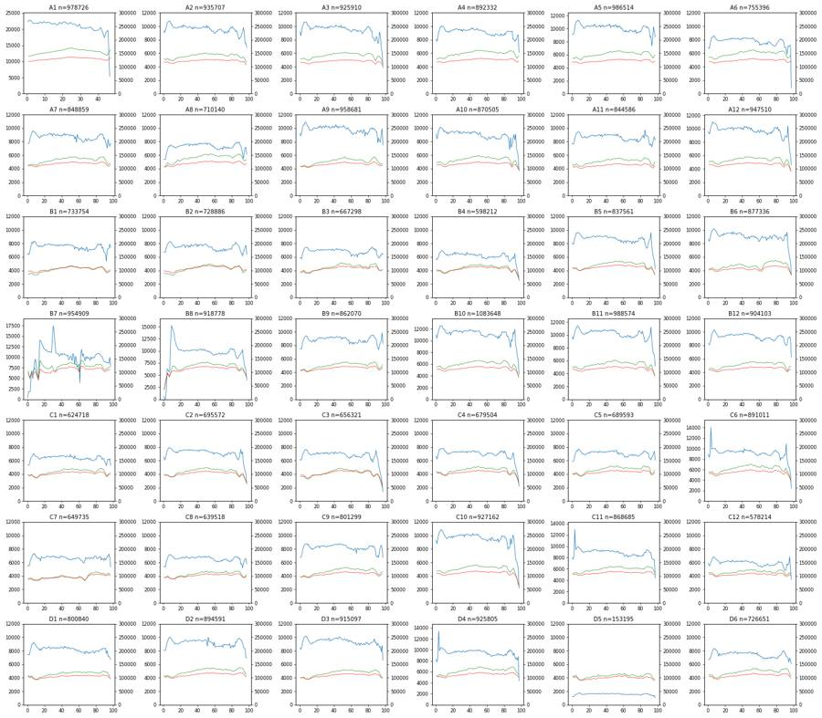
21
tool call · Bash
cd /task; cat > work/qc_time2.py <<'EOF'
import numpy as np, pandas as pd, hashlib
lay = pd.read_csv('/task/inputs/plate_layout.csv')
np.set_printoptions(linewidth=250)
hs={}
for w in lay.well:
e=np.load(f'work/npy/{w}.npy'); t=e[:,0]
hs.setdefault(hashlib.md5(e[:1000,1:6].tobytes()).hexdigest(),[]).append(w)
T=t.max()
h,_=np.histogram(t,bins=np.arange(0,np.ceil(T)+1,1.0))
med=np.median(h)
print(w, 'med',med,'first8',(h[:8]/med).round(2),'last10',(h[int(T)-9:int(T)+1]/med).round(2), 'lastbin_frac',round(T-int(T),2))
print([v for v in hs.values() if len(v)>1])
EOF
python3 -I work/qc_time2.py22
tool output
A1 med 21582.0 first8 [1.03 1.06 1.05 1.01 1.01 1.02 1.01 1.03] last10 [0.91 0.91 0.91 0.92 0.95 0.88 0.81 0.89 0.91 0.25] lastbin_frac 0.25 A2 med 9733.0 first8 [0.96 0.93 0.98 1.01 1.08 1.1 1.1 1.11] last10 [0.83 0.85 0.86 0.91 0.93 1.01 0.95 0.77 0.77 0.71] lastbin_frac 0.95 A3 med 9724.0 first8 [0.95 0.88 0.95 1.03 1.06 1.09 1.09 1.1 ] last10 [0.8 0.87 0.86 0.77 0.78 0.94 0.89 0.71 0.63 0.4 ] lastbin_frac 0.66 A4 med 9275.0 first8 [0.87 0.84 0.88 0.99 1.01 1.07 1.07 1.09] last10 [0.99 1. 0.87 0.87 0.83 0.86 0.86 0.92 0.95 0.66] lastbin_frac 0.74 A5 med 10264.5 first8 [0.88 0.89 0.9 0.99 1.05 1.08 1.08 1.1 ] last10 [1. 0.98 0.95 0.85 0.86 0.71 0.81 1. 0.93 0.85] lastbin_frac 0.87 A6 med 7905.5 first8 [0.87 0.85 0.93 1. 1.06 1.07 1.07 1.09] last10 [0.98 0.87 0.87 0.83 0.74 0.9 0.88 0.91 0.9 0.11] lastbin_frac 0.11 A7 med 8840.5 first8 [0.88 0.87 0.9 0.97 1.02 1.05 1.09 1.08] last10 [1.03 0.95 0.96 0.89 0.87 0.79 0.94 0.87 0.82 0.88] lastbin_frac 0.92 A8 med 7367.0 first8 [0.73 0.73 0.73 0.84 0.9 0.96 1. 0.99] last10 [1.08 1.02 1.01 0.93 0.86 0.74 0.84 0.96 0.97 0.83] lastbin_frac 0.94 A9 med 9965.5 first8 [0.93 0.89 0.94 1.01 1.05 1.05 1.1 1.09] last10 [0.97 0.95 0.95 0.79 0.86 0.81 0.79 0.91 1. 0.75] lastbin_frac 0.82 A10 med 9118.5 first8 [1. 0.92 0.96 1.06 1.09 1.11 1.1 1.09] last10 [0.78 0.83 0.94 0.99 0.91 1. 0.76 0.72 0.62 0.4 ] lastbin_frac 0.7 A11 med 8744.5 first8 [0.89 0.87 0.89 0.98 1.02 1.06 1.07 1.09] last10 [1.01 0.99 0.88 0.85 0.88 0.82 0.87 0.96 1. 0.94] lastbin_frac 0.92 A12 med 9855.5 first8 [0.97 0.93 0.97 1.05 1.08 1.12 1.1 1.1 ] last10 [0.83 0.88 0.91 0.9 0.88 1.06 0.83 0.68 0.61 0.46] lastbin_frac 0.9 B1 med 7646.0 first8 [0.86 0.83 0.84 0.93 1. 1.07 1.04 1.09] last10 [0.97 0.88 0.87 0.85 0.7 0.93 0.94 0.95 1.03 0.97] lastbin_frac 0.94 B2 med 7524.5 first8 [0.89 0.9 0.89 0.99 1.03 1.07 1.08 1.1 ] last10 [1. 0.95 0.9 0.87 0.81 0.9 0.94 0.99 1.03 0.85] lastbin_frac 0.87 B3 med 6955.0 first8 [0.85 0.84 0.82 0.93 0.99 1.03 1.06 1.06] last10 [1. 1.02 0.9 0.89 0.84 0.84 0.9 0.89 0.94 0.92] lastbin_frac 0.94 B4 med 6265.0 first8 [0.92 0.89 0.92 0.97 1.05 1.07 1.1 1.11] last10 [0.9 0.91 0.95 0.92 1.04 0.85 0.74 0.63 0.56 0.4 ] lastbin_frac 0.86 B5 med 8770.0 first8 [0.92 0.89 0.92 1.01 1.05 1.09 1.09 1.1 ] last10 [0.85 0.91 0.97 0.98 1.1 0.86 0.76 0.66 0.62 0.48] lastbin_frac 0.9 B6 med 9066.0 first8 [0.95 0.92 0.96 1.03 1.08 1.11 1.12 1.12] last10 [0.93 1. 1.03 1. 1.07 0.83 0.74 0.66 0.58 0.37] lastbin_frac 0.84 B7 med 10176.5 first8 [0.03 0.18 0.18 0.18 0.54 0.65 0.48 0.67] last10 [0.94 0.89 0.88 0.89 0.85 0.85 0.86 0.84 0.98 0.77] lastbin_frac 0.9 B8 med 9969.0 first8 [0.06 0.01 0. 0.22 0.63 0.61 0.57 0.6 ] last10 [0.91 0.92 0.96 0.97 1.03 0.86 0.74 0.66 0.62 0.39] lastbin_frac 0.75 B9 med 8863.5 first8 [0.84 0.85 0.84 0.94 0.99 1.03 1.05 1.06] last10 [1.02 1.01 0.92 0.86 0.83 0.9 0.94 0.97 1.11 0.93] lastbin_frac 0.96 B10 med 11369.0 first8 [0.97 0.91 0.98 1.03 1.07 1.1 1.1 1.1 ] last10 [0.89 0.87 1. 0.98 1.05 0.81 0.75 0.64 0.59 0.38] lastbin_frac 0.78 B11 med 10299.0 first8 [0.94 0.9 0.96 1.01 1.06 1.08 1.11 1.1 ] last10 [0.89 0.93 0.93 0.96 1.09 0.91 0.75 0.68 0.67 0.5 ] lastbin_frac 0.93 B12 med 9356.0 first8 [0.88 0.86 0.88 0.96 1.02 1.07 1.08 1.1 ] last10 [0.97 0.88 0.87 0.85 0.87 0.96 0.97 0.99 0.96 0.67] lastbin_frac 0.78 C1 med 6449.5 first8 [0.82 0.83 0.84 0.93 1.01 1.02 1.05 1.1 ] last10 [0.98 0.98 0.9 0.88 0.82 0.92 0.97 0.94 0.97 0.82] lastbin_frac 0.76 C2 med 7286.0 first8 [0.9 0.83 0.87 0.96 1.03 1.05 1.08 1.08] last10 [0.88 0.95 1.05 0.96 1. 0.78 0.7 0.61 0.56 0.35] lastbin_frac 0.79 C3 med 6952.0 first8 [0.89 0.87 0.9 0.98 1.02 1.06 1.1 1.09] last10 [0.98 1.09 0.95 0.9 0.75 0.68 0.59 0.53 0.39 0.2 ] lastbin_frac 0.72 C4 med 7151.0 first8 [0.93 0.87 0.92 1.02 1.08 1.07 1.09 1.09] last10 [0.89 0.91 1.01 0.92 0.78 0.73 0.64 0.58 0.48 0.31] lastbin_frac 0.8 C5 med 7134.0 first8 [0.82 0.83 0.84 0.95 1. 1.05 1.04 1.08] last10 [0.99 1. 0.89 0.89 0.86 0.91 0.93 0.99 1.03 0.85] lastbin_frac 0.86 C6 med 9296.0 first8 [0.96 0.89 0.97 1.51 1.07 1.08 1.07 1.08] last10 [0.91 0.95 0.94 1.17 0.86 0.75 0.69 0.67 0.53 0.26] lastbin_frac 0.57 C7 med 6679.5 first8 [0.84 0.82 0.83 0.93 0.98 1.03 1.08 1.08] last10 [0.98 0.94 1. 0.95 0.98 1.03 1.03 1.09 1. 0.8 ] lastbin_frac 0.91 C8 med 6609.5 first8 [0.82 0.81 0.81 0.94 0.97 1.04 1.08 1.08] last10 [0.99 1. 0.87 0.88 0.78 0.88 0.95 0.99 1. 0.88] lastbin_frac 0.87 C9 med 8281.0 first8 [0.81 0.82 0.84 0.94 0.99 1.03 1.05 1.06] last10 [0.96 0.84 0.82 0.84 0.82 0.92 1. 1.04 0.98 0.81] lastbin_frac 0.9 C10 med 9749.5 first8 [0.96 0.9 0.96 1.04 1.08 1.1 1.12 1.1 ] last10 [0.89 0.97 1.03 0.97 0.81 0.65 0.64 0.59 0.53 0.23] lastbin_frac 0.48 C11 med 9035.0 first8 [0.89 0.85 0.92 1.44 1.04 1.06 1.09 1.1 ] last10 [1.04 1.03 0.99 0.99 0.98 0.87 0.85 0.85 0.84 0.49] lastbin_frac 0.54 C12 med 6039.5 first8 [0.98 0.91 0.93 1.01 1.05 1.11 1.13 1.12] last10 [0.86 0.81 0.79 0.83 0.96 0.93 0.97 1.13 0.83 0.58] lastbin_frac 0.75 D1 med 8308.5 first8 [0.9 0.9 0.89 0.96 1.02 1.08 1.08 1.12] last10 [1.01 1.01 1. 1.01 0.91 0.96 0.87 0.87 0.84 0.81] lastbin_frac 0.94 D2 med 9290.0 first8 [0.87 0.87 0.87 0.94 1. 1.03 1.07 1.08] last10 [1.06 1.06 1.03 1.03 0.99 0.93 0.9 0.89 0.75 0.75] lastbin_frac 0.93 D3 med 9416.5 first8 [0.9 0.87 0.9 0.97 1.02 1.07 1.07 1.08] last10 [0.98 0.99 0.93 0.97 0.94 0.9 0.92 0.83 0.93 0.7 ] lastbin_frac 0.75 D4 med 9578.0 first8 [0.87 0.81 0.89 1.4 1.03 1.07 1.09 1.08] last10 [1.03 1. 0.94 0.98 0.92 0.87 0.89 0.84 0.92 0.45] lastbin_frac 0.53 D5 med 1596.5 first8 [0.76 0.74 0.78 0.88 0.93 0.99 1. 1.04] last10 [1. 1.01 0.93 0.92 0.92 0.84 0.87 0.78 0.87 0.66] lastbin_frac 0.77 D6 med 7549.5 first8 [0.89 0.88 0.9 0.96 1.02 1.06 1.1 1.1 ] last10 [1.06 1.02 1.01 0.95 0.94 0.91 0.83 0.92 0.86 0.8 ] lastbin_frac 0.93 []
24
tool call · Bash
cd /task; cat > work/plot_scatter.py <<'EOF'
import numpy as np, pandas as pd
import matplotlib; matplotlib.use('Agg')
import matplotlib.pyplot as plt
from matplotlib.colors import LogNorm
lay = pd.read_csv('/task/inputs/plate_layout.csv')
fig,axs=plt.subplots(7,6,figsize=(24,28))
for ax,w in zip(axs.ravel(),lay.well):
e=np.load(f'work/npy/{w}.npy')
ax.hist2d(e[:,1],e[:,2],bins=200,range=[[0,1048576],[0,1048576]],norm=LogNorm(),cmap='jet')
ax.set_title(w)
plt.tight_layout(); plt.savefig('work/fsc_ssc.png',dpi=50)
fig,axs=plt.subplots(7,6,figsize=(24,28))
for ax,w in zip(axs.ravel(),lay.well):
e=np.load(f'work/npy/{w}.npy')
ax.hist2d(e[:,1],e[:,2],bins=200,range=[[0,400000],[0,500000]],norm=LogNorm(),cmap='jet')
ax.set_title(w)
plt.tight_layout(); plt.savefig('work/fsc_ssc_zoom.png',dpi=50)
EOF
python3 -I work/plot_scatter.py25
tool call · Read
{
"file_path": "/task/work/fsc_ssc.png"
}26
tool output
(Bash completed with no output)
27
tool output
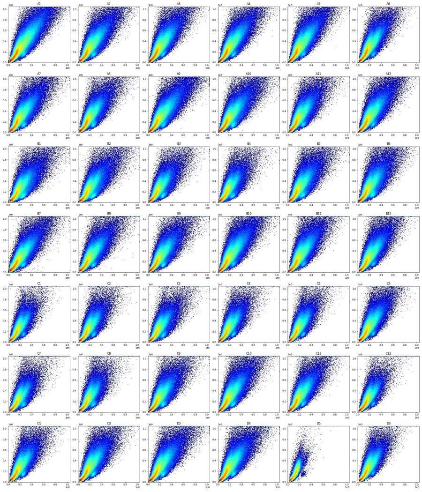
28
tool call · Bash
cd /task; cat > work/plot_scatter2.py <<'EOF'
import numpy as np, pandas as pd
import matplotlib; matplotlib.use('Agg')
import matplotlib.pyplot as plt
from matplotlib.colors import LogNorm
ws=['A1','A9','B1','C7','D5','D6']
fig,axs=plt.subplots(3,6,figsize=(30,15))
for j,w in enumerate(ws):
e=np.load(f'work/npy/{w}.npy')
axs[0,j].hist2d(e[:,1],e[:,2],bins=250,range=[[0,500000],[0,600000]],norm=LogNorm(),cmap='jet'); axs[0,j].set_title(w+' FSC-A vs SSC-A lin')
axs[0,j].grid(alpha=.3)
m=(e[:,1]>0)&(e[:,2]>0)
axs[1,j].hist2d(np.log10(e[m,1]),np.log10(e[m,2]),bins=250,range=[[4,6.1],[3,6.1]],norm=LogNorm(),cmap='jet'); axs[1,j].set_title(w+' log10'); axs[1,j].grid(alpha=.3)
axs[2,j].hist2d(e[:,7],e[:,2],bins=250,range=[[0,1048576],[0,1048576]],norm=LogNorm(),cmap='jet'); axs[2,j].set_title(w+' SSC-H vs SSC-A'); axs[2,j].grid(alpha=.3)
plt.tight_layout(); plt.savefig('work/scatter_detail.png',dpi=55)
EOF
python3 -I work/plot_scatter2.py29
tool call · Read
{
"file_path": "/task/work/scatter_detail.png"
}30
tool output
(Bash completed with no output)
31
tool output
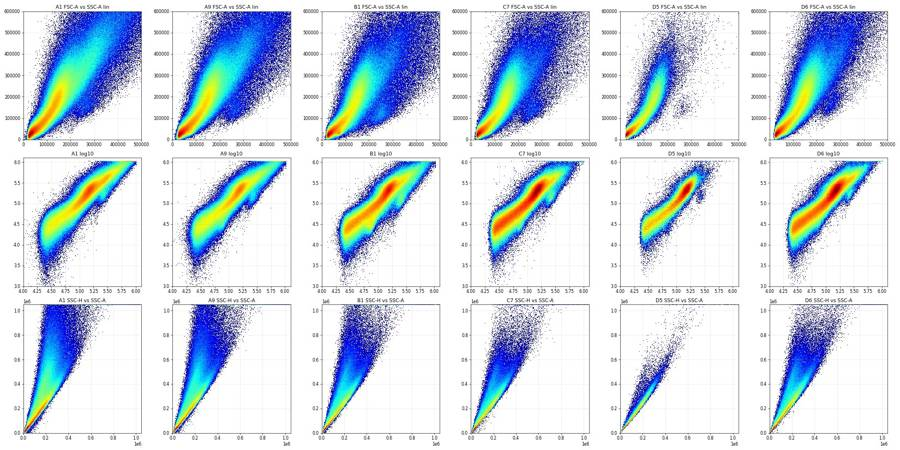
33
agent
Scatter plots are reviewed; now using the Zombie and NCAM signals to work out where intact cells sit versus debris, so I can place the Cells polygon.
34
tool call · Bash
cd /task; cat > work/plot_fl.py <<'EOF'
import numpy as np, pandas as pd
import matplotlib; matplotlib.use('Agg')
import matplotlib.pyplot as plt
from matplotlib.colors import LogNorm
def asinh(x,c=150): return np.arcsinh(x/c)/np.log(10)
ws=['A1','A6','B1','C7','D5','D6']
fig,axs=plt.subplots(5,6,figsize=(30,25))
for j,w in enumerate(ws):
e=np.load(f'work/npy/{w}.npy')
fsc,ssc,bl,rl,vl=e[:,1],e[:,2],e[:,3],e[:,4],e[:,5]
lf=np.log10(np.clip(fsc,1,None)); ls=np.log10(np.clip(ssc,1,None))
axs[0,j].hist2d(lf,asinh(rl),bins=250,range=[[4.2,6.1],[-1,4.2]],norm=LogNorm(),cmap='jet'); axs[0,j].set_title(w+' logFSC-A vs asinh RL3')
axs[1,j].hist2d(lf,asinh(vl),bins=250,range=[[4.2,6.1],[-1,4.2]],norm=LogNorm(),cmap='jet'); axs[1,j].set_title(w+' logFSC-A vs asinh VL1')
axs[2,j].hist2d(lf,asinh(bl),bins=250,range=[[4.2,6.1],[-1,4.2]],norm=LogNorm(),cmap='jet'); axs[2,j].set_title(w+' logFSC-A vs asinh BL1')
axs[3,j].hist2d(asinh(rl),ls,bins=250,range=[[-1,4.2],[3.5,6.1]],norm=LogNorm(),cmap='jet'); axs[3,j].set_title(w+' asinh RL3 vs logSSC (all)')
axs[4,j].hist2d(asinh(rl),asinh(vl),bins=250,range=[[-1,4.2],[-1,4.2]],norm=LogNorm(),cmap='jet'); axs[4,j].set_title(w+' RL3 vs VL1 (all)')
for a in axs[:,j]: a.grid(alpha=.3)
plt.tight_layout(); plt.savefig('work/fl_detail.png',dpi=55)
EOF
python3 -I work/plot_fl.py35
tool call · Read
{
"file_path": "/task/work/fl_detail.png"
}36
tool output
(Bash completed with no output)
37
tool output
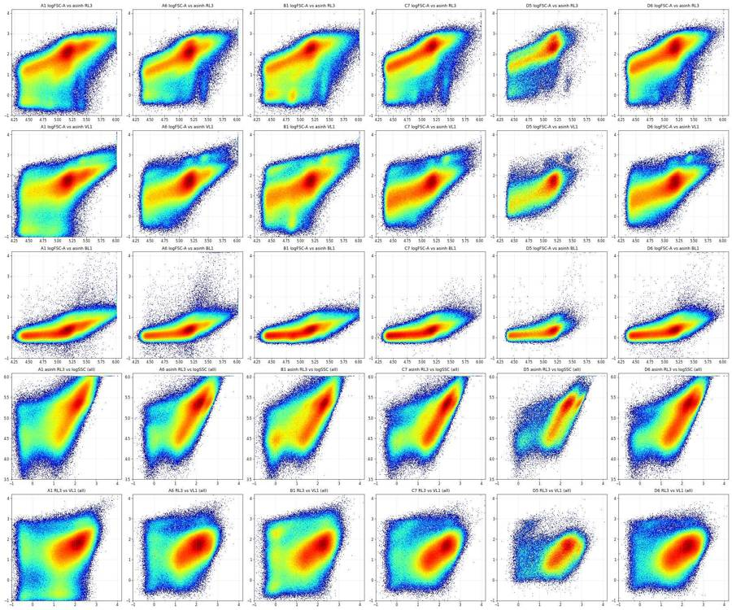
39
tool call · Bash
cd /task; cat > work/plot_rl.py <<'EOF'
import numpy as np, pandas as pd
import matplotlib; matplotlib.use('Agg')
import matplotlib.pyplot as plt
from matplotlib.colors import LogNorm
def asinh(x,c=150): return np.arcsinh(x/c)/np.log(10)
ws=['A1','A6','B1','C7','D5','D6']
fig,axs=plt.subplots(5,6,figsize=(30,25))
for j,w in enumerate(ws):
e=np.load(f'work/npy/{w}.npy')
fsc,ssc,bl,rl,vl=e[:,1],e[:,2],e[:,3],e[:,4],e[:,5]
cells=(fsc>70000)&(fsc<1e6)&(ssc<1e6)
for lo,hi,col in [(25000,70000,'gray'),(70000,120000,'b'),(120000,200000,'g'),(200000,400000,'orange'),(400000,1e6,'r')]:
m=(fsc>lo)&(fsc<hi)
axs[0,j].hist(asinh(rl[m]),bins=300,range=(-1,4.3),histtype='step',color=col,label=f'FSC {lo/1000:.0f}-{hi/1000:.0f}k')
axs[0,j].set_yscale('log'); axs[0,j].legend(fontsize=7); axs[0,j].set_title(w+' asinh(RL3/150)/ln10 by FSC bin')
for lo,hi,col in [(25000,70000,'gray'),(70000,120000,'b'),(120000,200000,'g'),(200000,400000,'orange'),(400000,1e6,'r')]:
m=(fsc>lo)&(fsc<hi)
axs[1,j].hist(asinh(rl[m]),bins=300,range=(-1,4.3),histtype='step',color=col)
axs[1,j].set_title('same, linear y')
neg=rl<1000
axs[2,j].hist2d(fsc[neg],ssc[neg],bins=200,range=[[0,600000],[0,600000]],norm=LogNorm(),cmap='jet'); axs[2,j].set_title(f'RL3<1000: n={neg.sum()} ({100*neg.mean():.1f}%)')
mid=(rl>=1000)&(rl<30000)
axs[3,j].hist2d(fsc[mid],ssc[mid],bins=200,range=[[0,600000],[0,600000]],norm=LogNorm(),cmap='jet'); axs[3,j].set_title(f'RL3 1k-30k: n={mid.sum()} ({100*mid.mean():.1f}%)')
hi_=rl>=30000
axs[4,j].hist2d(fsc[hi_],ssc[hi_],bins=200,range=[[0,600000],[0,600000]],norm=LogNorm(),cmap='jet'); axs[4,j].set_title(f'RL3>30k: n={hi_.sum()} ({100*hi_.mean():.1f}%)')
plt.tight_layout(); plt.savefig('work/rl_detail.png',dpi=55)
EOF
python3 -I work/plot_rl.py40
tool call · Read
{
"file_path": "/task/work/rl_detail.png"
}41
tool output
(Bash completed with no output)
42
tool output
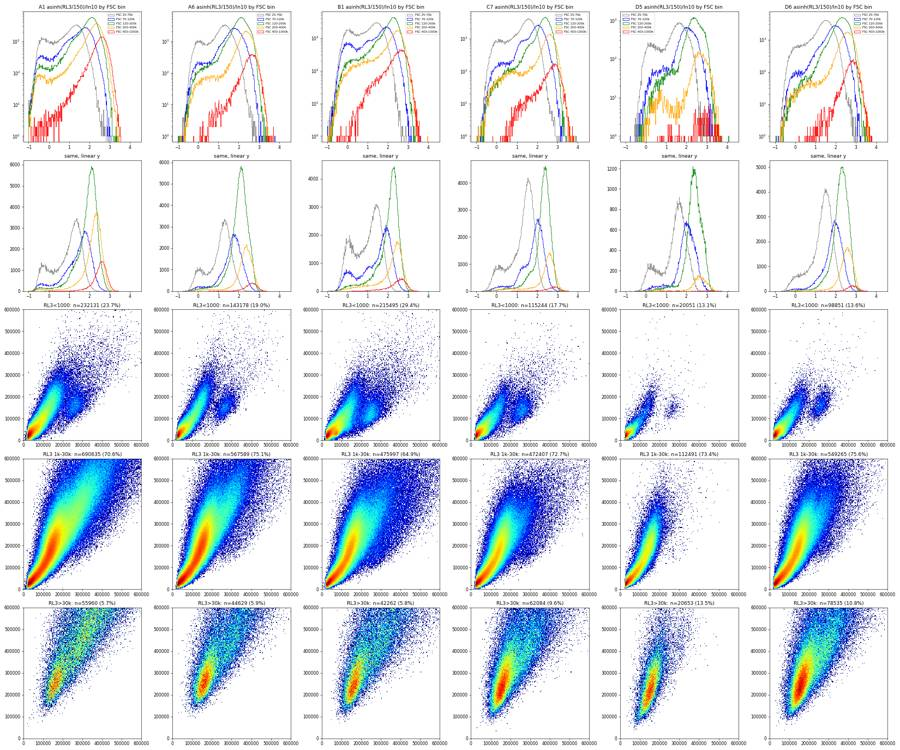
44
tool call · Bash
cd /task; cat > work/plot_gfp.py <<'EOF'
import numpy as np, pandas as pd
import matplotlib; matplotlib.use('Agg')
import matplotlib.pyplot as plt
from matplotlib.colors import LogNorm
def asinh(x,c=150): return np.arcsinh(x/c)/np.log(10)
ws=['A5','A6','A12','B12','C6','D5']
fig,axs=plt.subplots(5,6,figsize=(30,25))
for j,w in enumerate(ws):
e=np.load(f'work/npy/{w}.npy')
fsc,ssc,bl,rl,vl=e[:,1],e[:,2],e[:,3],e[:,4],e[:,5]
ok=(fsc<1e6)&(ssc<1e6)
axs[0,j].hist2d(asinh(rl[ok]),asinh(bl[ok]),bins=250,range=[[-1,4.3],[-1,4.3]],norm=LogNorm(),cmap='jet'); axs[0,j].set_title(w+' RL3 vs BL1 (all)')
g=ok&(bl>3000)
axs[1,j].hist2d(fsc[g],ssc[g],bins=150,range=[[0,600000],[0,600000]],norm=LogNorm(),cmap='jet'); axs[1,j].set_title(f'BL1>3000 n={g.sum()} scatter')
axs[2,j].hist(asinh(rl[g]),bins=150,range=(-1,4.3),histtype='step',color='g',density=True,label='BL1>3000')
c=ok&(fsc>100000)
axs[2,j].hist(asinh(rl[c]),bins=150,range=(-1,4.3),histtype='step',color='k',density=True,label='FSC>100k all'); axs[2,j].legend()
axs[3,j].hist2d(asinh(rl[g]),asinh(vl[g]),bins=150,range=[[-1,4.3],[-1,4.3]],norm=LogNorm(),cmap='jet'); axs[3,j].set_title('BL1>3000: RL3 vs VL1')
axs[4,j].hist2d(asinh(vl[ok]),asinh(bl[ok]),bins=250,range=[[-1,4.3],[-1,4.3]],norm=LogNorm(),cmap='jet'); axs[4,j].set_title('VL1 vs BL1 (all)')
plt.tight_layout(); plt.savefig('work/gfp_detail.png',dpi=55)
EOF
python3 -I work/plot_gfp.py45
tool call · Read
{
"file_path": "/task/work/gfp_detail.png"
}46
tool output
(Bash completed with no output)
47
tool output
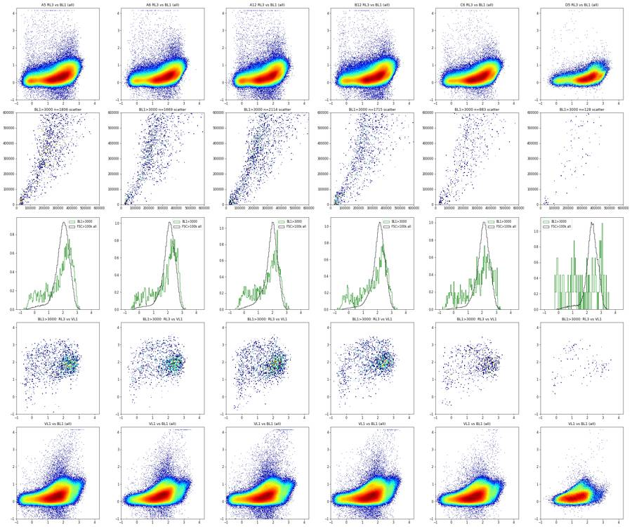
49
thinking
GFP-bright events mostly fall in the main Zombie peak, so I'm plotting FSC and Zombie histograms on a log scale to find the debris and live/dead valleys.
50
tool call · Bash
cd /task; cat > work/plot_h.py <<'EOF'
import numpy as np, pandas as pd
import matplotlib; matplotlib.use('Agg')
import matplotlib.pyplot as plt
lay = pd.read_csv('/task/inputs/plate_layout.csv')
fig,axs=plt.subplots(2,2,figsize=(22,14))
cm=plt.get_cmap('turbo')
for i,w in enumerate(lay.well):
e=np.load(f'work/npy/{w}.npy')
fsc,ssc,rl=e[:,1],e[:,2],e[:,4]
c=cm(i/41)
h,b=np.histogram(np.log10(np.clip(fsc,1,None)),bins=200,range=(4.3,6.05)); axs[0,0].plot(b[:-1],h/len(e),color=c,lw=.8,label=w)
h,b=np.histogram(np.log10(np.clip(ssc,1,None)),bins=200,range=(3.5,6.05)); axs[0,1].plot(b[:-1],h/len(e),color=c,lw=.8)
m=(fsc>90000)&(fsc<600000)&(ssc<900000)
h,b=np.histogram(np.log10(np.clip(rl[m],1,None)),bins=200,range=(1.5,6.05)); axs[1,0].plot(b[:-1],h/m.sum(),color=c,lw=.8)
axs[1,1].plot(b[:-1],h/m.sum(),color=c,lw=.8)
axs[1,1].set_yscale('log')
axs[0,0].set_title('log10 FSC-A all'); axs[0,1].set_title('log10 SSC-A all'); axs[1,0].set_title('log10 RL3-A, FSC 90-600k')
axs[0,0].legend(ncol=6,fontsize=6)
for a in axs.ravel(): a.grid(alpha=.3)
plt.tight_layout(); plt.savefig('work/hists.png',dpi=60)
EOF
python3 -I work/plot_h.py51
tool call · Read
{
"file_path": "/task/work/hists.png"
}52
tool output
(Bash completed with no output)
53
tool output
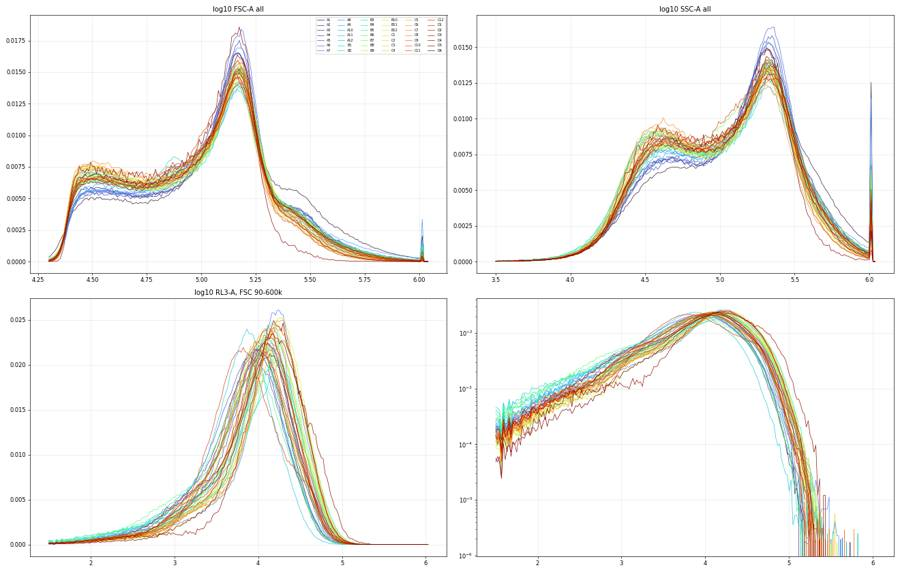
55
tool call · Bash
cd /task; cat > work/plot_pool.py <<'EOF'
import numpy as np, pandas as pd
import matplotlib; matplotlib.use('Agg')
import matplotlib.pyplot as plt
from matplotlib.colors import LogNorm
lay = pd.read_csv('/task/inputs/plate_layout.csv')
H=np.zeros((300,300)); H2=np.zeros((300,300)); HS=np.zeros((300,300)); HS2=np.zeros((300,300))
for w in lay.well:
e=np.load(f'work/npy/{w}.npy')
H+=np.histogram2d(e[:,1],e[:,2],bins=300,range=[[0,300000],[0,400000]])[0]
H2+=np.histogram2d(e[:,1],e[:,2],bins=300,range=[[0,1048576],[0,1048576]])[0]
HS+=np.histogram2d(e[:,7],e[:,2],bins=300,range=[[0,1048576],[0,1048576]])[0]
HS2+=np.histogram2d(e[:,7],e[:,2],bins=300,range=[[0,300000],[0,400000]])[0]
np.save('work/H.npy',H); np.save('work/H2.npy',H2)
fig,axs=plt.subplots(2,2,figsize=(22,22))
for ax,h,ext in [(axs[0,0],H,[0,300000,0,400000]),(axs[0,1],H2,[0,1048576,0,1048576]),(axs[1,1],HS,[0,1048576,0,1048576]),(axs[1,0],HS2,[0,300000,0,400000])]:
ax.imshow(h.T,origin='lower',extent=ext,aspect='auto',norm=LogNorm(vmin=1),cmap='jet')
lv=np.percentile(h[h>0],[50,70,80,90,95,98,99.5])
ax.contour(h.T,levels=lv,extent=ext,colors='k',linewidths=.5)
ax.grid(alpha=.4); ax.minorticks_on()
axs[0,0].set_title('pooled FSC-A vs SSC-A zoom'); axs[0,1].set_title('pooled FSC-A vs SSC-A'); axs[1,1].set_title('pooled SSC-H vs SSC-A'); axs[1,0].set_title('SSC-H vs SSC-A zoom')
plt.tight_layout(); plt.savefig('work/pool.png',dpi=60)
EOF
python3 -I work/plot_pool.py56
tool call · Read
{
"file_path": "/task/work/pool.png"
}57
tool output
(Bash completed with no output)
58
tool output
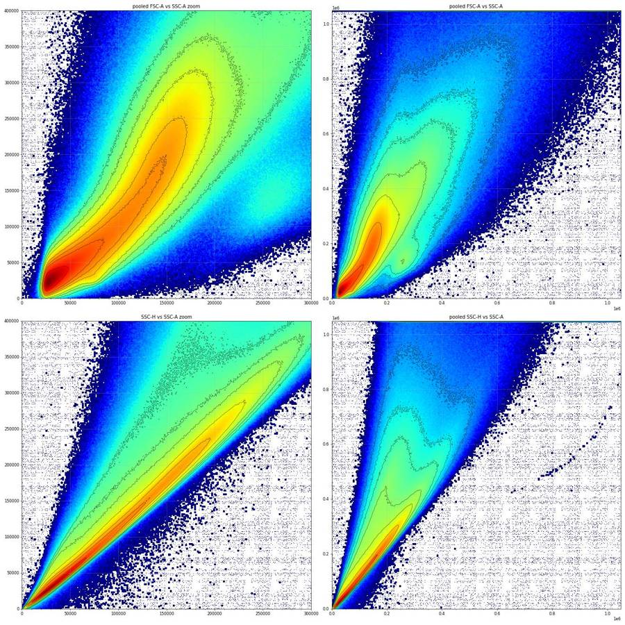
60
tool call · Bash
cd /task; cat > work/island.py <<'EOF'
import numpy as np, pandas as pd
lay = pd.read_csv('/task/inputs/plate_layout.csv')
cols=['Time', 'FSC-A', 'SSC-A', 'BL1-A', 'RL3-A', 'VL1-A', 'FSC-H', 'SSC-H', 'BL1-H', 'RL3-H', 'VL1-H', 'FSC-W', 'SSC-W', 'BL1-W', 'RL3-W', 'VL1-W']
for w in ['A1','A6','B1','B12','C7','D5','D6']:
e=np.load(f'work/npy/{w}.npy')
isl=(e[:,1]>230000)&(e[:,1]<320000)&(e[:,2]>90000)&(e[:,2]<190000)
main=(e[:,1]>120000)&(e[:,1]<200000)&(e[:,2]>150000)&(e[:,2]<300000)
print(w,'island n',isl.sum(), 'main n',main.sum())
for nm,m in [('isl',isl),('main',main)]:
print(' ',nm,{c:[int(v) for v in np.percentile(e[m,cols.index(c)],[10,50,90])] for c in ['BL1-A','RL3-A','VL1-A','FSC-H','SSC-H','FSC-W','SSC-W']}, 'RL3<1000: %.1f%%'%(100*(e[m,4]<1000).mean()), 'BL1>3000: %.2f%%'%(100*(e[m,3]>3000).mean()))
EOF
python3 -I work/island.py61
tool output
A1 island n 4161 main n 215901
isl {'BL1-A': [62, 153, 281], 'RL3-A': [-254, 126, 2903], 'VL1-A': [6880, 28021, 47640], 'FSC-H': [134352, 166149, 176402], 'SSC-H': [82743, 107474, 128963], 'FSC-W': [95, 106, 139], 'SSC-W': [90, 101, 134]} RL3<1000: 78.5% BL1>3000: 0.24%
main {'BL1-A': [54, 152, 304], 'RL3-A': [1240, 7700, 18235], 'VL1-A': [934, 3524, 8326], 'FSC-H': [97847, 116394, 131924], 'SSC-H': [122716, 164884, 213426], 'FSC-W': [81, 91, 115], 'SSC-W': [82, 91, 116]} RL3<1000: 8.2% BL1>3000: 0.03%
A6 island n 3041 main n 205520
isl {'BL1-A': [108, 238, 488], 'RL3-A': [-48, 182, 1706], 'VL1-A': [13203, 43130, 67046], 'FSC-H': [154063, 171185, 180012], 'SSC-H': [83552, 105884, 125771], 'FSC-W': [96, 104, 116], 'SSC-W': [92, 99, 115]} RL3<1000: 85.4% BL1>3000: 0.53%
main {'BL1-A': [63, 152, 282], 'RL3-A': [2275, 8965, 23913], 'VL1-A': [1283, 3663, 9075], 'FSC-H': [102425, 119004, 134716], 'SSC-H': [132270, 171602, 217275], 'FSC-W': [82, 89, 99], 'SSC-W': [84, 91, 100]} RL3<1000: 4.5% BL1>3000: 0.07%
B1 island n 7768 main n 141326
isl {'BL1-A': [43, 128, 227], 'RL3-A': [-11, 376, 3404], 'VL1-A': [6559, 30368, 55082], 'FSC-H': [140369, 168066, 178640], 'SSC-H': [70900, 91865, 117374], 'FSC-W': [95, 105, 138], 'SSC-W': [92, 103, 135]} RL3<1000: 72.0% BL1>3000: 0.03%
main {'BL1-A': [74, 164, 306], 'RL3-A': [2110, 11580, 25510], 'VL1-A': [1039, 3689, 9777], 'FSC-H': [102019, 119360, 135128], 'SSC-H': [128962, 168893, 215999], 'FSC-W': [82, 89, 101], 'SSC-W': [84, 91, 102]} RL3<1000: 5.1% BL1>3000: 0.00%
B12 island n 3444 main n 210194
isl {'BL1-A': [145, 317, 770], 'RL3-A': [-72, 205, 2180], 'VL1-A': [22713, 45132, 64801], 'FSC-H': [154940, 172375, 181533], 'SSC-H': [83501, 106210, 125826], 'FSC-W': [95, 103, 119], 'SSC-W': [92, 99, 117]} RL3<1000: 81.6% BL1>3000: 0.52%
main {'BL1-A': [58, 152, 337], 'RL3-A': [2544, 9543, 24626], 'VL1-A': [1271, 3792, 9438], 'FSC-H': [101595, 118959, 134971], 'SSC-H': [129390, 169248, 216477], 'FSC-W': [82, 89, 102], 'SSC-W': [84, 91, 102]} RL3<1000: 3.3% BL1>3000: 0.05%
C7 island n 4255 main n 131434
isl {'BL1-A': [61, 147, 261], 'RL3-A': [-18, 322, 2865], 'VL1-A': [10403, 40216, 63312], 'FSC-H': [155603, 171156, 180591], 'SSC-H': [78101, 101808, 125573], 'FSC-W': [95, 103, 120], 'SSC-W': [92, 99, 118]} RL3<1000: 76.8% BL1>3000: 0.42%
main {'BL1-A': [64, 155, 303], 'RL3-A': [4269, 16506, 35016], 'VL1-A': [1161, 3297, 8264], 'FSC-H': [101439, 118486, 134388], 'SSC-H': [129396, 168797, 216376], 'FSC-W': [82, 89, 101], 'SSC-W': [85, 91, 101]} RL3<1000: 2.4% BL1>3000: 0.00%
D5 island n 339 main n 39450
isl {'BL1-A': [88, 185, 349], 'RL3-A': [71, 313, 2019], 'VL1-A': [26280, 47910, 74125], 'FSC-H': [159181, 172656, 181927], 'SSC-H': [83468, 101792, 124887], 'FSC-W': [96, 102, 110], 'SSC-W': [93, 98, 107]} RL3<1000: 86.4% BL1>3000: 0.59%
main {'BL1-A': [48, 136, 286], 'RL3-A': [6714, 17860, 50622], 'VL1-A': [1060, 3291, 7828], 'FSC-H': [103373, 118684, 134294], 'SSC-H': [135131, 173346, 218751], 'FSC-W': [83, 88, 96], 'SSC-W': [86, 91, 96]} RL3<1000: 1.9% BL1>3000: 0.02%
D6 island n 2035 main n 173699
isl {'BL1-A': [84, 186, 368], 'RL3-A': [-31, 295, 3080], 'VL1-A': [21737, 45338, 62885], 'FSC-H': [156278, 170987, 179025], 'SSC-H': [89361, 112954, 131112], 'FSC-W': [95, 102, 116], 'SSC-W': [92, 98, 115]} RL3<1000: 77.5% BL1>3000: 0.20%
main {'BL1-A': [64, 154, 316], 'RL3-A': [4201, 14173, 33996], 'VL1-A': [1196, 3253, 8184], 'FSC-H': [102283, 118892, 134639], 'SSC-H': [131901, 171028, 217924], 'FSC-W': [82, 89, 100], 'SSC-W': [85, 90, 100]} RL3<1000: 1.6% BL1>3000: 0.02%63
tool call · Bash
cd /task; cat > work/plot_sing.py <<'EOF'
import numpy as np, pandas as pd
import matplotlib; matplotlib.use('Agg')
import matplotlib.pyplot as plt
from matplotlib.colors import LogNorm
from matplotlib.path import Path
cells_poly=np.array([(45e3,125e3),(150e3,50e3),(330e3,80e3),(1.0e6,550e3),(1.0e6,1.0e6),(330e3,1.0e6),(120e3,600e3)])
P=Path(cells_poly)
ws=['A1','A6','B1','C7','D5','D6']
fig,axs=plt.subplots(4,6,figsize=(30,20))
for j,w in enumerate(ws):
e=np.load(f'work/npy/{w}.npy')
c=P.contains_points(e[:,1:3])
fsc,ssc,ssh,rl=e[:,1],e[:,2],e[:,7],e[:,4]
axs[0,j].hist2d(fsc,ssc,bins=250,range=[[0,1048576],[0,1048576]],norm=LogNorm(),cmap='jet'); axs[0,j].plot(*np.vstack([cells_poly,cells_poly[:1]]).T,'k-'); axs[0,j].set_title(f'{w} cells {100*c.mean():.1f}%')
axs[1,j].hist2d(ssh[c],ssc[c],bins=250,range=[[0,1048576],[0,1048576]],norm=LogNorm(),cmap='jet'); axs[1,j].set_title('Cells: SSC-H vs SSC-A')
n=c&(rl<1500)
axs[2,j].hist2d(ssh[n],ssc[n],bins=250,range=[[0,600000],[0,600000]],norm=LogNorm(),cmap='jet'); axs[2,j].set_title(f'Cells & RL3<1500 (n={n.sum()}): SSC-H vs SSC-A')
for k in (1.0,1.2,1.4,1.6): axs[2,j].plot([0,600000],[0,600000*k],'k:',lw=.5)
r=ssc[c]/np.clip(ssh[c],1,None)
axs[3,j].hist(r,bins=200,range=(0.8,3),histtype='step',color='k',density=True,label='Cells')
axs[3,j].hist(ssc[n]/np.clip(ssh[n],1,None),bins=200,range=(0.8,3),histtype='step',color='g',density=True,label='Cells RL3<1500')
axs[3,j].legend(); axs[3,j].set_title('SSC-A/SSC-H'); axs[3,j].grid(alpha=.3)
plt.tight_layout(); plt.savefig('work/sing.png',dpi=55)
EOF
python3 -I work/plot_sing.py64
tool call · Read
{
"file_path": "/task/work/sing.png"
}65
tool output
(Bash completed with no output)
66
tool output
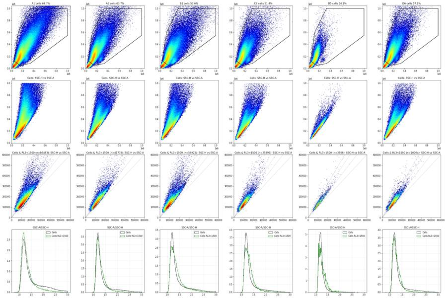
68
thinking
A small Zombie-negative, NCAM-bright cluster sits beside a large Zombie-stained cloud. I'm checking the singlet ratio for that cluster and the Zombie valley next, before building the FlowKit gates.
69
tool call · Bash
cd /task; python3 -I -c "
import flowkit as fk, inspect
print(fk.__version__)
print(inspect.signature(fk.transforms.LogicleTransform.__init__))
print(inspect.signature(fk.Dimension.__init__))
print(inspect.signature(fk.gates.RectangleGate.__init__)); print(inspect.signature(fk.gates.PolygonGate.__init__))
print(inspect.signature(fk.GatingStrategy.add_gate)); print(inspect.signature(fk.GatingStrategy.add_transform))
print(inspect.signature(fk.GatingStrategy.gate_sample))
"; cat > work/rlvalley.py <<'EOF'
import numpy as np, pandas as pd
import matplotlib; matplotlib.use('Agg')
import matplotlib.pyplot as plt
from matplotlib.path import Path
lay = pd.read_csv('/task/inputs/plate_layout.csv')
cells_poly=np.array([(45e3,125e3),(150e3,50e3),(330e3,80e3),(1.0e6,550e3),(1.0e6,1.0e6),(330e3,1.0e6),(120e3,600e3)])
P=Path(cells_poly)
def asinh(x,c=150): return np.arcsinh(x/c)/np.log(10)
fig,axs=plt.subplots(7,6,figsize=(24,24))
tot=np.zeros(240); rows=[]
for ax,w in zip(axs.ravel(),lay.well):
e=np.load(f'work/npy/{w}.npy')
c=P.contains_points(e[:,1:3])
r=e[:,2]/np.clip(e[:,7],1,None)
s=c&(r<1.5)&(r>0.9)
isl=(e[:,1]>230000)&(e[:,1]<320000)&(e[:,2]>90000)&(e[:,2]<190000)
h,b=np.histogram(asinh(e[s,4]),bins=240,range=(-1,4.3)); tot+=h
ax.plot(b[:-1],h,'k',lw=.8); ax.set_yscale('log'); ax.set_title(w); ax.grid(alpha=.3)
h2,_=np.histogram(asinh(e[s&isl,4]),bins=240,range=(-1,4.3)); ax.plot(b[:-1],h2,'g',lw=.8)
for v in (1000,1500,2000,3000): ax.axvline(asinh(v),color='r',lw=.4)
rows.append(dict(well=w,cells=c.mean()*100,sing=s.sum()/c.sum()*100,isl_ratio_p90=np.percentile(r[isl],90),isl_in_sing=(s&isl).sum()/isl.sum()*100,
**{f'lt{v}':100*(e[s,4]<v).sum()/s.sum() for v in (500,1000,1500,2000,3000)}, isl_lt1500=100*(e[s&isl,4]<1500).mean(),isl_lt3000=100*(e[s&isl,4]<3000).mean()))
plt.tight_layout(); plt.savefig('work/rlvalley.png',dpi=55)
print(pd.DataFrame(rows).round(2).to_string())
plt.figure(figsize=(10,5)); plt.plot(b[:-1],tot); plt.grid();
for v in (500,1000,1500,2000,3000): plt.axvline(asinh(v),color='r',lw=.4)
plt.xticks(np.arange(-1,4.5,0.25)); plt.savefig('work/rltot.png',dpi=70)
EOF
python3 -I work/rlvalley.py70
tool call · Read
{
"file_path": "/task/work/rlvalley.png"
}71
tool call · Read
{
"file_path": "/task/work/rltot.png"
}72
tool output
1.2.3 (self, param_t, param_w, param_m, param_a) (self, dimension_id, compensation_ref='uncompensated', transformation_ref=None, range_min=None, range_max=None) (self, gate_name, dimensions, use_complement=False) (self, gate_name, dimensions, vertices, use_complement=False) (self, gate, gate_path, sample_id=None) (self, transform_id, transform) (self, sample, cache_events=False, verbose=False) well cells sing isl_ratio_p90 isl_in_sing lt500 lt1000 lt1500 lt2000 lt3000 isl_lt1500 isl_lt3000 0 A1 64.66 63.94 1.83 70.99 7.74 12.88 17.23 20.91 27.40 95.90 98.54 1 A2 62.23 75.27 1.70 75.16 4.98 7.16 9.88 12.93 19.54 95.93 98.68 2 A3 62.65 76.53 1.69 77.43 5.57 9.92 14.32 18.31 25.69 96.79 98.75 3 A4 63.85 76.17 1.69 74.82 4.80 7.53 10.38 13.32 18.87 96.19 98.69 4 A5 62.86 74.98 1.73 73.56 4.89 8.08 12.11 16.28 24.68 97.03 98.85 5 A6 63.68 79.87 1.64 77.21 4.20 6.74 9.52 12.32 17.97 97.49 99.15 6 A7 59.83 75.37 1.76 69.87 4.87 7.26 9.19 10.90 14.07 92.12 97.42 7 A8 62.09 79.16 1.64 78.60 5.41 8.46 11.06 13.42 17.43 94.89 98.57 8 A9 58.21 71.20 1.87 64.90 6.46 10.47 13.71 16.59 21.47 92.63 97.93 9 A10 60.44 74.78 1.69 75.06 5.73 8.81 11.65 14.41 19.52 95.06 98.66 10 A11 58.76 77.77 1.65 78.46 6.62 11.58 15.96 19.84 26.44 96.94 99.39 11 A12 59.83 75.53 1.68 75.96 5.98 11.38 15.93 19.92 27.94 98.07 99.39 12 B1 53.55 74.10 1.92 61.52 7.65 11.45 14.40 17.07 21.63 93.79 97.87 13 B2 54.10 74.57 1.89 60.75 7.20 10.70 13.58 16.33 21.68 92.66 96.97 14 B3 54.95 78.63 1.77 69.26 5.06 7.59 9.81 11.87 15.66 91.89 96.98 15 B4 54.32 81.16 1.73 71.04 6.74 10.06 12.63 15.10 20.02 93.97 97.72 16 B5 57.24 76.90 1.78 70.10 7.40 11.99 15.78 19.09 25.18 96.46 98.70 17 B6 56.42 75.64 1.70 73.56 8.65 14.81 19.54 23.38 30.71 97.26 99.18 18 B7 57.97 74.33 1.77 72.35 3.29 5.80 8.65 11.09 15.13 92.30 97.09 19 B8 57.83 75.46 1.72 73.62 3.53 6.53 9.30 11.73 15.85 93.90 98.02 20 B9 59.15 76.33 1.69 74.87 3.90 7.17 10.38 12.96 17.22 93.53 98.13 21 B10 58.96 73.41 1.73 71.82 3.43 6.60 9.78 12.68 17.81 93.90 97.86 22 B11 58.62 75.86 1.68 75.81 3.60 7.11 10.79 14.10 20.28 96.83 99.02 23 B12 58.21 76.87 1.68 74.65 3.32 5.98 8.90 11.74 17.10 96.42 98.79 24 C1 54.27 83.46 1.63 79.81 2.51 3.99 5.81 7.61 10.86 94.17 98.70 25 C2 54.37 81.11 1.64 78.95 3.34 5.39 7.65 9.80 13.62 93.45 98.12 26 C3 53.23 78.99 1.78 68.10 4.32 6.81 9.11 11.18 14.94 92.25 97.20 27 C4 56.03 80.78 1.63 78.66 3.32 5.64 8.27 10.64 14.76 95.90 98.63 28 C5 56.25 81.86 1.61 80.89 2.91 5.06 7.51 9.85 14.00 96.71 98.98 29 C6 56.51 77.28 1.68 78.10 2.80 5.39 8.44 11.58 18.08 96.77 99.26 30 C7 51.36 81.22 1.69 76.50 3.72 5.72 8.01 10.17 13.71 93.89 98.40 31 C8 53.75 81.65 1.65 77.71 4.05 6.41 8.76 10.89 14.45 94.52 98.32 32 C9 56.79 77.30 1.67 76.35 4.24 7.85 11.79 15.20 20.74 94.62 98.52 33 C10 58.75 75.73 1.68 76.33 3.92 7.59 11.57 15.27 21.76 95.56 98.84 34 C11 58.44 77.13 1.66 77.98 3.62 6.17 9.24 12.52 18.91 95.53 98.87 35 C12 56.84 83.49 1.60 81.09 3.15 4.84 7.58 11.30 20.14 96.76 98.63 36 D1 55.90 78.58 1.67 77.47 3.58 6.72 9.83 12.57 17.15 94.66 98.52 37 D2 57.97 77.30 1.67 77.57 3.75 7.18 10.26 12.74 16.88 94.61 98.21 38 D3 56.75 74.39 1.74 71.44 4.77 9.58 13.97 17.63 23.37 95.45 98.73 39 D4 58.90 75.68 1.69 74.18 3.84 7.49 11.09 14.18 19.31 95.49 98.57 40 D5 54.08 94.88 1.53 84.37 2.08 3.41 4.31 5.04 6.71 95.10 98.25 41 D6 57.15 82.05 1.61 82.01 1.89 3.53 5.37 7.17 10.51 94.31 98.32
73
tool output
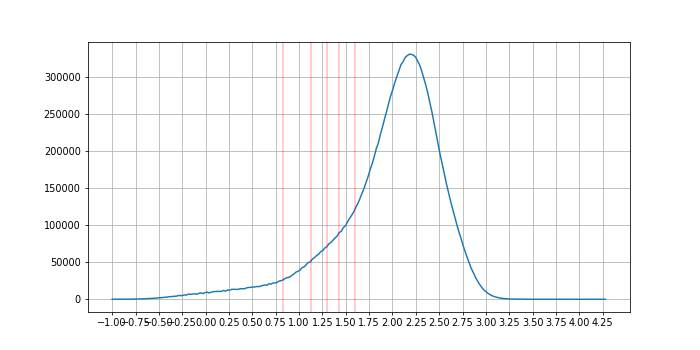
74
tool output
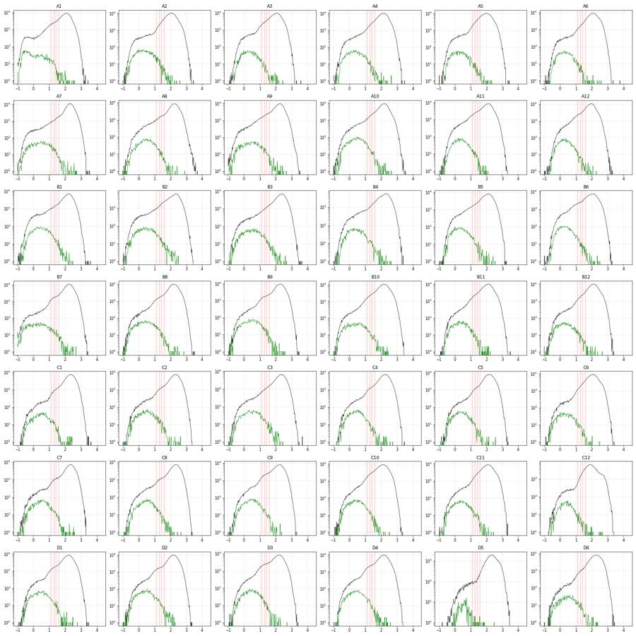
76
tool call · Bash
cd /task; cat > work/plot_live2d.py <<'EOF'
import numpy as np, pandas as pd, flowkit as fk
import matplotlib; matplotlib.use('Agg')
import matplotlib.pyplot as plt
from matplotlib.colors import LogNorm
from matplotlib.path import Path
cells_poly=np.array([(45e3,125e3),(150e3,50e3),(330e3,80e3),(1.0e6,550e3),(1.0e6,1.0e6),(330e3,1.0e6),(120e3,600e3)])
P=Path(cells_poly)
xf=fk.transforms.LogicleTransform(1048576,0.8,4.5,0)
ticks=np.array([-1000,0,1000,3000,10000,30000,100000,1e6])
ws=['A1','A6','B1','B7','C7','C12','D5','D6']
fig,axs=plt.subplots(4,8,figsize=(40,20))
for j,w in enumerate(ws):
e=np.load(f'work/npy/{w}.npy').astype(float)
c=P.contains_points(e[:,1:3]); r=e[:,2]/np.clip(e[:,7],1,None); s=c&(r<1.5)&(r>0.9)
x=xf.apply(e[s,4]);
axs[0,j].hist2d(x,e[s,2],bins=200,range=[[0,1],[0,1048576]],norm=LogNorm(),cmap='jet'); axs[0,j].set_title(w+' Singlets RL3 logicle vs SSC-A')
axs[1,j].hist2d(x,e[s,2],bins=200,range=[[0,1],[0,1048576]],cmap='jet',cmin=1); axs[1,j].set_title('linear colour')
axs[2,j].hist(x,bins=200,range=(0,1),histtype='step',color='k'); axs[2,j].set_title('Singlets RL3 logicle')
axs[3,j].hist2d(x,xf.apply(e[s,5]),bins=200,range=[[0,1],[0,1]],norm=LogNorm(),cmap='jet'); axs[3,j].set_title('RL3 vs VL1 (NCAM)')
for a in axs[:,j]:
a.set_xticks(xf.apply(ticks)); a.set_xticklabels([f'{int(t)}' for t in ticks],fontsize=7,rotation=45)
for v in (1000,1500,2000,3000): a.axvline(xf.apply(np.array([v]))[0],color='m',lw=.4)
plt.tight_layout(); plt.savefig('work/live2d.png',dpi=50)
EOF
python3 -I work/plot_live2d.py77
tool call · Read
{
"file_path": "/task/work/live2d.png"
}78
tool output
(Bash completed with no output)
79
tool output
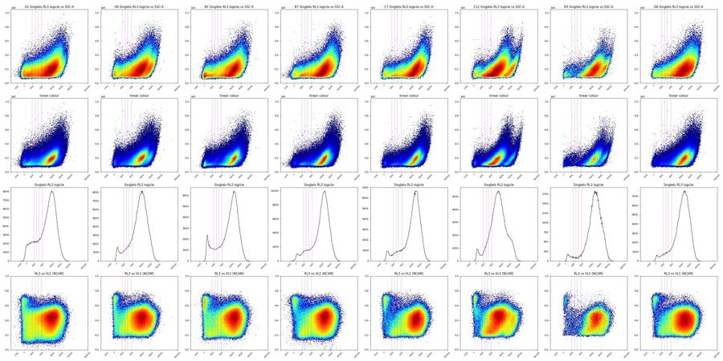
81
tool call · Bash
cd /task; cat > work/valley.py <<'EOF'
import numpy as np, pandas as pd, flowkit as fk
from scipy.ndimage import gaussian_filter1d
from matplotlib.path import Path
lay = pd.read_csv('/task/inputs/plate_layout.csv')
cells_poly=np.array([(45e3,125e3),(150e3,50e3),(330e3,80e3),(1.0e6,550e3),(1.0e6,1.0e6),(330e3,1.0e6),(120e3,600e3)])
P=Path(cells_poly)
xfs={w_:fk.transforms.LogicleTransform(1048576,w_,4.5,0) for w_ in (0.5,0.8,1.0)}
rows=[]; pooled={k:np.zeros(400) for k in xfs}
for w in lay.well:
e=np.load(f'work/npy/{w}.npy').astype(float)
c=P.contains_points(e[:,1:3]); r=e[:,2]/np.clip(e[:,7],1,None); s=c&(r<1.5)&(r>0.9)
d={'well':w}
for k,xf in xfs.items():
x=xf.apply(e[s,4]); h,b=np.histogram(x,bins=400,range=(0,1)); pooled[k]+=h
hs=gaussian_filter1d(h.astype(float),4)
ctr=(b[:-1]+b[1:])/2
lo=np.searchsorted(ctr,xf.apply(np.array([100.]))[0]); hi=np.searchsorted(ctr,xf.apply(np.array([6000.]))[0])
pk=np.argmax(hs[:lo+1]) # negative peak
i=pk+np.argmin(hs[pk:hi]);
d[f'valley_w{k}']=xf.inverse(np.array([ctr[i]]))[0]; d[f'negpk_w{k}']=xf.inverse(np.array([ctr[pk]]))[0]; d[f'depth_w{k}']=hs[i]/hs[pk]
rows.append(d)
df=pd.DataFrame(rows); print(df.round(2).to_string()); print(df.median(numeric_only=True))
for k,xf in xfs.items():
hs=gaussian_filter1d(pooled[k],3); ctr=(np.arange(400)+.5)/400
lo=np.searchsorted(ctr,xf.apply(np.array([100.]))[0]); hi=np.searchsorted(ctr,xf.apply(np.array([6000.]))[0]); pk=np.argmax(hs[:lo+1]); i=pk+np.argmin(hs[pk:hi])
print('pooled W',k,'valley',xf.inverse(np.array([ctr[i]]))[0], 'negpk',xf.inverse(np.array([ctr[pk]]))[0])
EOF
python3 -I work/valley.py82
tool output
well valley_w0.5 negpk_w0.5 depth_w0.5 valley_w0.8 negpk_w0.8 depth_w0.8 valley_w1.0 negpk_w1.0 depth_w1.0 0 A1 108.40 108.40 1.00 102.54 102.54 1.00 2107.22 115.43 0.86 1 A2 502.42 63.13 0.74 683.61 102.54 0.53 740.12 115.43 0.60 2 A3 345.72 90.21 0.78 410.51 102.54 0.75 470.50 115.43 0.94 3 A4 414.52 108.40 0.90 632.65 102.54 0.71 740.12 115.43 0.78 4 A5 390.99 90.21 0.76 507.96 102.54 0.67 559.94 115.43 0.82 5 A6 402.67 99.29 0.77 532.62 102.54 0.66 604.80 115.43 0.79 6 A7 302.58 45.18 0.82 1123.52 55.79 0.64 1689.38 115.43 0.56 7 A8 451.07 108.40 0.92 841.11 102.54 0.70 2927.81 115.43 0.63 8 A9 192.36 108.40 0.98 1064.66 102.54 0.81 2618.98 115.43 0.69 9 A10 379.45 108.40 0.92 761.43 102.54 0.67 1107.93 115.43 0.71 10 A11 302.58 108.40 0.97 483.43 102.54 0.90 2328.42 115.43 0.86 11 A12 108.40 108.40 1.00 102.54 102.54 1.00 115.43 115.43 1.00 12 B1 402.67 72.13 0.70 1183.75 79.16 0.54 2328.42 115.43 0.50 13 B2 379.45 54.15 0.75 1064.66 79.16 0.58 1393.12 115.43 0.56 14 B3 323.91 72.13 0.81 841.11 102.54 0.63 1791.13 115.43 0.63 15 B4 615.67 108.40 0.96 1093.92 102.54 0.56 1344.90 115.43 0.54 16 B5 182.82 108.40 0.99 922.90 102.54 0.76 1947.02 115.43 0.68 17 B6 211.65 99.29 0.98 1509.22 102.54 0.85 1842.64 115.43 0.69 18 B7 251.15 108.40 0.95 434.71 102.54 0.85 425.91 115.43 0.97 19 B8 251.15 108.40 0.95 362.40 102.54 0.95 115.43 115.43 1.00 20 B9 292.09 108.40 0.94 410.51 102.54 0.90 2864.43 115.43 0.95 21 B10 108.40 108.40 1.00 102.54 102.54 1.00 115.43 115.43 1.00 22 B11 108.40 108.40 1.00 102.54 102.54 1.00 115.43 115.43 1.00 23 B12 345.72 99.29 0.93 434.71 102.54 0.85 115.43 115.43 1.00 24 C1 414.52 108.40 0.80 607.41 102.54 0.65 649.78 115.43 0.78 25 C2 356.83 108.40 0.86 582.34 102.54 0.72 694.89 115.43 0.83 26 C3 390.99 108.40 0.82 683.61 102.54 0.70 1689.38 115.43 0.73 27 C4 414.52 108.40 0.92 557.41 102.54 0.78 604.80 115.43 0.92 28 C5 356.83 99.29 0.90 507.96 102.54 0.82 604.80 115.43 0.96 29 C6 271.42 99.29 0.84 386.41 102.54 0.85 115.43 115.43 1.00 30 C7 489.28 108.40 0.80 607.41 102.54 0.62 694.89 115.43 0.73 31 C8 426.53 108.40 0.94 709.36 102.54 0.73 2679.19 115.43 0.75 32 C9 345.72 108.40 0.97 459.01 102.54 0.90 115.43 115.43 1.00 33 C10 108.40 108.40 1.00 102.54 102.54 1.00 115.43 115.43 1.00 34 C11 379.45 108.40 0.94 557.41 102.54 0.81 649.78 115.43 0.94 35 C12 529.32 108.40 0.70 632.65 102.54 0.56 694.89 115.43 0.69 36 D1 345.72 108.40 0.82 386.41 102.54 0.82 115.43 115.43 1.00 37 D2 261.24 108.40 0.96 338.48 102.54 0.99 2272.25 115.43 0.96 38 D3 211.65 108.40 0.98 102.54 102.54 1.00 115.43 115.43 1.00 39 D4 302.58 108.40 0.92 386.41 102.54 0.91 115.43 115.43 1.00 40 D5 108.40 108.40 1.00 1690.28 102.54 0.65 1740.05 115.43 0.54 41 D6 356.83 108.40 0.85 410.51 102.54 0.84 115.43 115.43 1.00 valley_w0.5 345.724633 negpk_w0.5 108.398566 depth_w0.5 0.922036 valley_w0.8 545.010365 negpk_w0.8 102.543253 depth_w0.8 0.798259 valley_w1.0 694.886450 negpk_w1.0 115.429923 depth_w1.0 0.843278 dtype: float64 pooled W 0.5 valley 281.7023117679142 negpk 108.39856595155186 pooled W 0.8 valley 483.426308261832 negpk 102.54325253136561 pooled W 1.0 valley 604.8045284338895 negpk 115.4299232707851
84
agent
Building the gates now. The 1-D Zombie valley is shallow, so I'm using the NCAM-bright live cluster as a diagnostic to see where the Zombie-negative population actually ends.
85
tool call · Bash
cd /task; cat > work/negedge.py <<'EOF'
import numpy as np, pandas as pd, flowkit as fk
import matplotlib; matplotlib.use('Agg')
import matplotlib.pyplot as plt
from matplotlib.path import Path
lay = pd.read_csv('/task/inputs/plate_layout.csv')
cells_poly=np.array([(45e3,125e3),(150e3,50e3),(330e3,80e3),(1.0e6,550e3),(1.0e6,1.0e6),(330e3,1.0e6),(120e3,600e3)])
P=Path(cells_poly)
bins=np.linspace(-1000,8000,181)
pool_hi=np.zeros(180); pool_lo=np.zeros(180); rows=[]
for w in lay.well:
e=np.load(f'work/npy/{w}.npy').astype(float)
c=P.contains_points(e[:,1:3]); r=e[:,2]/np.clip(e[:,7],1,None); s=c&(r<1.5)&(r>0.9)
hi=s&(e[:,5]>15000); lo=s&(e[:,5]<=15000)
pool_hi+=np.histogram(e[hi,4],bins)[0]; pool_lo+=np.histogram(e[lo,4],bins)[0]
x=e[hi,4]; neg=x[x<600]
med=np.median(x[x<3000]);
# robust sd from lower half of negative peak
mode=np.median(x[x<800]); rsd=1.4826*np.median(np.abs(x[x<mode]-mode))*1.0
rows.append(dict(well=w,n_hi=hi.sum(),mode=mode,rsd_lowhalf=np.sqrt(np.mean((x[x<mode]-mode)**2)), p_lt500=(x<500).mean(),p_lt1000=(x<1000).mean(),p_lt1500=(x<1500).mean(),p_lt2000=(x<2000).mean(),p_lt3000=(x<3000).mean(),p_lt5000=(x<5000).mean()))
df=pd.DataFrame(rows); print(df.round(3).to_string())
fig,ax=plt.subplots(1,2,figsize=(16,5))
c=(bins[:-1]+bins[1:])/2
ax[0].plot(c,pool_hi); ax[0].set_title('pooled singlets, VL1>15000: RL3 linear'); ax[0].grid(); ax[0].set_xticks(np.arange(-1000,8001,500))
ax[1].plot(c,pool_lo); ax[1].set_title('pooled singlets, VL1<=15000: RL3 linear'); ax[1].grid(); ax[1].set_xticks(np.arange(-1000,8001,500))
plt.tight_layout(); plt.savefig('work/negedge.png',dpi=65)
EOF
python3 -I work/negedge.py86
tool call · Read
{
"file_path": "/task/work/negedge.png"
}87
tool output
well n_hi mode rsd_lowhalf p_lt500 p_lt1000 p_lt1500 p_lt2000 p_lt3000 p_lt5000 0 A1 12160 -26.0 231.016 0.468 0.535 0.569 0.593 0.622 0.672 1 A2 16032 86.0 170.282 0.447 0.513 0.539 0.554 0.576 0.618 2 A3 13732 106.0 144.423 0.441 0.507 0.538 0.558 0.593 0.657 3 A4 14293 98.0 168.850 0.422 0.487 0.515 0.532 0.556 0.597 4 A5 14903 94.0 252.641 0.419 0.477 0.503 0.522 0.558 0.634 5 A6 13706 96.5 138.217 0.415 0.467 0.489 0.506 0.538 0.600 6 A7 16326 97.0 195.403 0.391 0.461 0.492 0.509 0.530 0.556 7 A8 15909 160.0 176.284 0.424 0.511 0.546 0.565 0.587 0.618 8 A9 16600 126.5 208.625 0.341 0.412 0.445 0.467 0.494 0.531 9 A10 19630 155.0 190.716 0.402 0.483 0.515 0.532 0.553 0.585 10 A11 16754 122.0 140.313 0.455 0.520 0.546 0.565 0.589 0.636 11 A12 14140 123.0 135.585 0.432 0.495 0.520 0.538 0.569 0.630 12 B1 18831 113.0 153.077 0.457 0.532 0.564 0.583 0.609 0.652 13 B2 16339 121.0 172.378 0.464 0.543 0.575 0.595 0.622 0.664 14 B3 14528 134.0 230.785 0.443 0.522 0.559 0.578 0.601 0.630 15 B4 9759 131.0 166.838 0.518 0.600 0.623 0.642 0.663 0.692 16 B5 14115 110.0 156.712 0.527 0.599 0.629 0.648 0.672 0.718 17 B6 16988 105.0 133.741 0.576 0.648 0.680 0.700 0.728 0.773 18 B7 18337 92.0 279.953 0.392 0.457 0.489 0.508 0.534 0.572 19 B8 17013 119.0 180.596 0.395 0.464 0.496 0.517 0.545 0.582 20 B9 19020 151.0 184.677 0.396 0.478 0.513 0.532 0.558 0.591 21 B10 15254 129.0 191.403 0.416 0.497 0.536 0.562 0.593 0.637 22 B11 15378 129.0 154.310 0.411 0.481 0.515 0.535 0.565 0.621 23 B12 16057 114.0 153.494 0.395 0.459 0.490 0.509 0.542 0.600 24 C1 9910 172.0 170.518 0.438 0.516 0.553 0.573 0.594 0.620 25 C2 12141 168.0 176.113 0.475 0.570 0.608 0.630 0.657 0.685 26 C3 12815 150.0 174.469 0.430 0.516 0.547 0.568 0.593 0.622 27 C4 11859 165.0 165.121 0.475 0.561 0.595 0.615 0.638 0.666 28 C5 10199 141.0 147.108 0.493 0.572 0.606 0.625 0.646 0.679 29 C6 12751 122.0 149.692 0.438 0.509 0.542 0.564 0.600 0.665 30 C7 11733 190.0 183.752 0.481 0.579 0.616 0.638 0.660 0.687 31 C8 10361 192.0 172.383 0.511 0.617 0.656 0.677 0.699 0.725 32 C9 15257 181.0 174.534 0.440 0.531 0.568 0.590 0.617 0.653 33 C10 13720 160.0 168.651 0.470 0.564 0.603 0.625 0.655 0.695 34 C11 15889 156.0 175.793 0.418 0.496 0.532 0.552 0.581 0.627 35 C12 11480 148.0 137.368 0.401 0.461 0.483 0.499 0.526 0.583 36 D1 13484 150.5 156.550 0.485 0.570 0.604 0.627 0.655 0.690 37 D2 12771 146.0 162.787 0.525 0.612 0.653 0.675 0.699 0.729 38 D3 12819 159.0 169.193 0.489 0.584 0.625 0.646 0.676 0.713 39 D4 12674 154.0 163.883 0.531 0.624 0.664 0.688 0.713 0.742 40 D5 1911 231.0 132.877 0.430 0.503 0.518 0.526 0.536 0.554 41 D6 9557 166.0 232.094 0.421 0.507 0.542 0.563 0.587 0.629
88
tool output
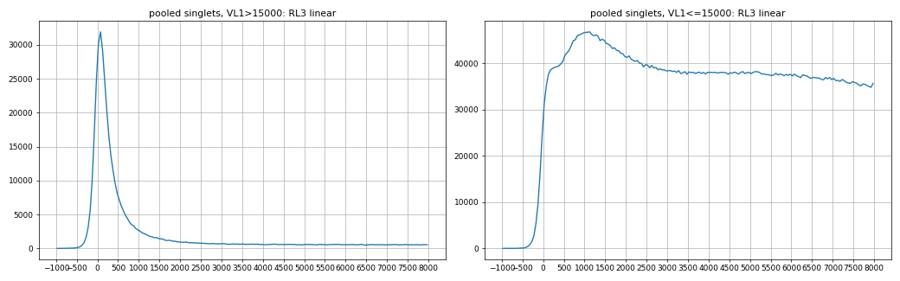
90
tool call · Bash
cd /task; cat > work/islratio.py <<'EOF'
import numpy as np, pandas as pd
import matplotlib; matplotlib.use('Agg')
import matplotlib.pyplot as plt
from matplotlib.colors import LogNorm
from matplotlib.path import Path
lay = pd.read_csv('/task/inputs/plate_layout.csv')
cells_poly=np.array([(45e3,125e3),(150e3,50e3),(330e3,80e3),(1.0e6,550e3),(1.0e6,1.0e6),(330e3,1.0e6),(120e3,600e3)])
P=Path(cells_poly)
b=np.linspace(0.9,3,211); hi=np.zeros(210); hc=np.zeros(210); hn=np.zeros(210)
H=np.zeros((200,200)); HF=np.zeros((200,200)); HA=np.zeros((250,250))
for w in lay.well:
e=np.load(f'work/npy/{w}.npy').astype(float)
c=P.contains_points(e[:,1:3]); r=e[:,2]/np.clip(e[:,7],1,None)
live=c&(e[:,4]<1000)&(e[:,5]>15000)
hi+=np.histogram(r[live],b)[0]; hc+=np.histogram(r[c],b)[0]; hn+=np.histogram(r[c&(e[:,4]<1000)],b)[0]
H+=np.histogram2d(e[live,7],e[live,2],bins=200,range=[[0,400000],[0,500000]])[0]
HF+=np.histogram2d(e[live,1],e[live,2],bins=200,range=[[0,600000],[0,500000]])[0]
l2=(e[:,4]<1000)&(e[:,5]>15000)
HA+=np.histogram2d(e[l2,1],e[l2,2],bins=250,range=[[0,1048576],[0,1048576]])[0]
fig,ax=plt.subplots(1,4,figsize=(28,7))
c_=(b[:-1]+b[1:])/2
ax[0].plot(c_,hi/hi.max(),label='Cells & RL3<1000 & VL1>15000'); ax[0].plot(c_,hc/hc.max(),label='Cells'); ax[0].plot(c_,hn/hn.max(),label='Cells & RL3<1000'); ax[0].legend(); ax[0].grid(); ax[0].set_xticks(np.arange(0.9,3.01,0.1)); ax[0].set_title('SSC-A/SSC-H')
ax[1].imshow(H.T,origin='lower',extent=[0,400000,0,500000],aspect='auto',norm=LogNorm(),cmap='jet'); ax[1].set_title('live NCAM-hi: SSC-H vs SSC-A')
for k in (1.0,1.1,1.5,1.6): ax[1].plot([0,400000],[0,400000*k],'k:',lw=.6)
ax[2].imshow(HF.T,origin='lower',extent=[0,600000,0,500000],aspect='auto',norm=LogNorm(),cmap='jet'); ax[2].set_title('live NCAM-hi in Cells: FSC-A vs SSC-A'); ax[2].grid()
ax[3].imshow(HA.T,origin='lower',extent=[0,1048576,0,1048576],aspect='auto',norm=LogNorm(),cmap='jet'); ax[3].set_title('RL3<1000 & VL1>15000, all events: FSC-A vs SSC-A'); ax[3].plot(*np.vstack([cells_poly,cells_poly[:1]]).T,'k-'); ax[3].grid()
plt.tight_layout(); plt.savefig('work/islratio.png',dpi=60)
EOF
python3 -I work/islratio.py91
tool call · Read
{
"file_path": "/task/work/islratio.png"
}92
tool output
(Bash completed with no output)
93
tool output
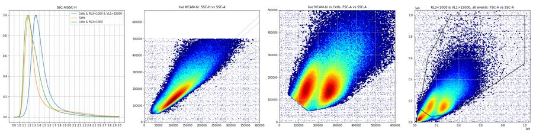
95
tool call · Bash
cd /task; cat > work/cellszoom.py <<'EOF'
import numpy as np, pandas as pd
import matplotlib; matplotlib.use('Agg')
import matplotlib.pyplot as plt
from matplotlib.colors import LogNorm
lay = pd.read_csv('/task/inputs/plate_layout.csv')
cells_poly=np.array([(45e3,125e3),(150e3,50e3),(330e3,80e3),(1.0e6,550e3),(1.0e6,1.0e6),(330e3,1.0e6),(120e3,600e3)])
rng=[[0,400000],[0,400000]]
HA=np.zeros((200,200)); HN=np.zeros((200,200)); HL=np.zeros((200,200)); HP=np.zeros((200,200))
for w in lay.well:
e=np.load(f'work/npy/{w}.npy')
HA+=np.histogram2d(e[:,1],e[:,2],bins=200,range=rng)[0]
n=e[:,4]<1000
HN+=np.histogram2d(e[n,1],e[n,2],bins=200,range=rng)[0]
l=n&(e[:,5]>15000)
HL+=np.histogram2d(e[l,1],e[l,2],bins=200,range=rng)[0]
p=e[:,4]>3000
HP+=np.histogram2d(e[p,1],e[p,2],bins=200,range=rng)[0]
fig,axs=plt.subplots(2,4,figsize=(32,16))
for j,(h,t) in enumerate([(HA,'all'),(HN,'RL3<1000'),(HL,'RL3<1000 & VL1>15000'),(HP,'RL3>3000')]):
axs[0,j].imshow(h.T,origin='lower',extent=[0,400000,0,400000],cmap='jet',vmax=np.percentile(h,99.7)); axs[0,j].set_title(t+' linear colour')
axs[1,j].imshow(h.T,origin='lower',extent=[0,400000,0,400000],cmap='jet',norm=LogNorm(vmin=1)); axs[1,j].set_title(t+' log colour')
for a in axs[:,j]:
a.plot(*np.vstack([cells_poly,cells_poly[:1]]).T,'w-',lw=1); a.set_xlim(0,400000); a.set_ylim(0,400000); a.grid(alpha=.4); a.set_xticks(np.arange(0,400001,50000)); a.set_yticks(np.arange(0,400001,50000))
plt.tight_layout(); plt.savefig('work/cellszoom.png',dpi=50)
EOF
python3 -I work/cellszoom.py96
tool call · Read
{
"file_path": "/task/work/cellszoom.png"
}97
tool output
(Bash completed with no output)
98
tool output
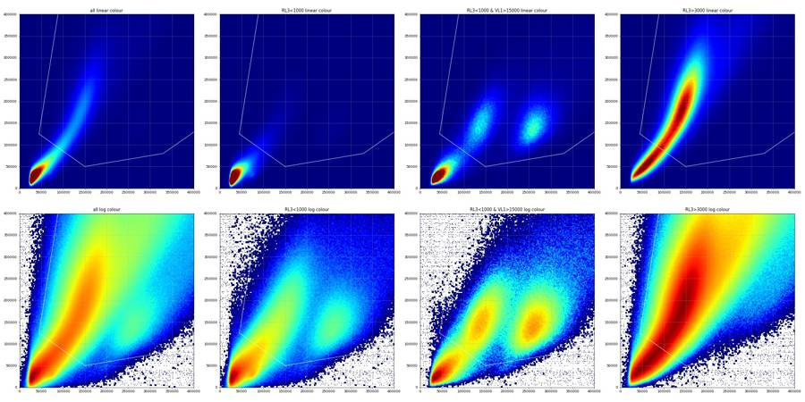
100
agent
Scatter gates are settled (the Cells polygon keeps both live NCAM-bright clusters and cuts at the debris saddle). Now looking at GFP on the Live population across all wells to set the BL1 cut-off.
101
tool call · Bash
cd /task; cat > work/gfp_live.py <<'EOF'
import numpy as np, pandas as pd, flowkit as fk
import matplotlib; matplotlib.use('Agg')
import matplotlib.pyplot as plt
from matplotlib.colors import LogNorm
from matplotlib.path import Path
lay = pd.read_csv('/task/inputs/plate_layout.csv')
P=Path(np.array([(45e3,125e3),(150e3,50e3),(330e3,80e3),(1.0e6,550e3),(1.0e6,1.0e6),(330e3,1.0e6),(120e3,600e3)]))
xf=fk.transforms.LogicleTransform(1048576,1.0,4.5,0)
ticks=np.array([-100,0,100,300,1000,3000,10000,100000,1e6])
fig,axs=plt.subplots(7,6,figsize=(30,30)); rows=[]
for ax,(w,dose) in zip(axs.ravel(),zip(lay.well,lay.dose_vg_per_cell)):
e=np.load(f'work/npy/{w}.npy').astype(float)
c=P.contains_points(e[:,1:3]); r=e[:,2]/np.clip(e[:,7],1,None); s=c&(r<1.6)&(r>0.9); l=s&(e[:,4]<1000)
x=e[l,3]
ax.hist2d(xf.apply(x),e[l,2],bins=150,range=[[0.1,1],[0,600000]],norm=LogNorm(),cmap='jet'); ax.set_title(f'{w} dose {dose} Live n={l.sum()}')
ax.set_xticks(xf.apply(ticks)); ax.set_xticklabels([f'{int(t)}' for t in ticks],fontsize=7,rotation=45)
for v in (500,700,1000,1500): ax.axvline(xf.apply(np.array([v]))[0],color='m',lw=.4)
rows.append(dict(well=w,dose=dose,live=l.sum(),med=np.median(x),p90=np.percentile(x,90),p95=np.percentile(x,95),p99=np.percentile(x,99),p999=np.percentile(x,99.9),
**{f'gt{v}':100*(x>v).mean() for v in (400,500,600,800,1000,1500,2000,3000,10000)}))
plt.tight_layout(); plt.savefig('work/gfp_live.png',dpi=45)
df=pd.DataFrame(rows); pd.set_option('display.width',250); print(df.round(2).to_string())
df.to_csv('work/gfp_live.csv',index=False)
EOF
python3 -I work/gfp_live.py102
tool call · Read
{
"file_path": "/task/work/gfp_live.png"
}103
tool output
well dose live med p90 p95 p99 p999 gt400 gt500 gt600 gt800 gt1000 gt1500 gt2000 gt3000 gt10000 0 A1 5000 55513 90.0 223.0 303.00 664.88 7957.58 2.90 1.93 1.27 0.63 0.36 0.22 0.19 0.15 0.09 1 A2 5000 33428 101.0 232.0 306.65 763.00 140275.32 2.89 1.88 1.42 0.95 0.77 0.62 0.56 0.48 0.34 2 A3 10000 45789 89.0 224.0 313.00 782.36 34971.56 3.14 2.18 1.63 0.97 0.70 0.52 0.46 0.37 0.19 3 A4 10000 34778 106.0 252.0 350.00 914.61 88963.55 3.79 2.55 1.83 1.19 0.92 0.70 0.63 0.55 0.37 4 A5 50000 39795 95.0 266.0 392.00 935.06 250232.98 4.76 3.06 2.14 1.25 0.96 0.76 0.68 0.59 0.41 5 A6 50000 27490 108.0 278.0 409.00 1314.33 343694.20 5.23 3.44 2.52 1.61 1.26 0.92 0.75 0.64 0.43 6 A7 5000 29958 102.0 221.0 282.00 706.43 39920.31 2.44 1.74 1.27 0.88 0.68 0.53 0.49 0.40 0.23 7 A8 5000 31091 98.0 223.0 294.00 791.10 150518.38 2.82 2.00 1.50 0.98 0.81 0.68 0.62 0.55 0.36 8 A9 10000 44588 96.0 217.0 277.00 587.00 27097.84 2.29 1.46 0.96 0.50 0.37 0.29 0.26 0.24 0.15 9 A10 10000 37012 100.0 224.0 292.00 642.89 88425.61 2.44 1.60 1.15 0.72 0.60 0.49 0.45 0.39 0.28 10 A11 50000 46926 94.0 230.0 313.00 759.75 177431.00 3.23 2.17 1.57 0.93 0.68 0.51 0.48 0.43 0.35 11 A12 50000 51138 87.0 229.0 331.00 968.00 322261.57 3.69 2.58 1.94 1.25 0.99 0.77 0.67 0.57 0.41 12 B1 5000 36175 91.0 195.0 242.00 447.00 883.26 1.29 0.74 0.44 0.15 0.07 0.03 0.02 0.01 0.01 13 B2 5000 34198 99.0 207.0 263.00 497.00 1402.45 1.75 0.98 0.63 0.30 0.17 0.10 0.08 0.04 0.00 14 B3 10000 23591 104.0 227.0 308.00 864.40 19945.64 3.05 2.10 1.53 1.10 0.88 0.71 0.60 0.50 0.19 15 B4 10000 28140 106.0 235.0 315.05 652.61 2610.04 3.05 1.82 1.23 0.60 0.38 0.19 0.13 0.07 0.01 16 B5 50000 46795 104.0 240.0 330.00 706.00 3593.33 3.48 2.17 1.43 0.76 0.48 0.29 0.22 0.13 0.02 17 B6 50000 58610 88.0 207.0 273.00 604.00 3467.60 2.26 1.45 1.02 0.54 0.39 0.24 0.19 0.12 0.02 18 B7 5000 25519 95.0 248.0 355.00 776.74 21653.51 3.89 2.36 1.60 0.95 0.73 0.53 0.44 0.35 0.21 19 B8 5000 27653 102.0 287.0 418.00 1110.96 34082.72 5.41 3.48 2.44 1.45 1.08 0.86 0.72 0.63 0.33 20 B9 10000 29563 99.0 258.8 374.00 1134.38 32455.03 4.34 2.94 2.15 1.38 1.11 0.81 0.69 0.51 0.27 21 B10 10000 32841 93.0 275.0 409.00 1054.60 56198.44 5.17 3.47 2.51 1.49 1.05 0.77 0.69 0.58 0.32 22 B11 50000 32961 100.0 335.0 500.00 1309.20 110716.12 7.52 5.00 3.53 2.00 1.36 0.84 0.71 0.60 0.41 23 B12 50000 25786 106.0 368.0 577.00 1713.00 400173.87 8.90 6.25 4.69 2.82 1.97 1.14 0.87 0.65 0.43 24 C1 5000 11994 103.0 225.0 308.00 2004.91 24964.87 3.53 2.83 2.34 1.76 1.53 1.19 1.01 0.82 0.33 25 C2 5000 17713 106.0 243.0 362.40 3230.52 30380.93 4.31 3.31 2.72 2.19 1.99 1.63 1.41 1.06 0.44 26 C3 10000 20383 104.0 227.0 307.00 854.36 23889.88 3.14 2.14 1.56 1.05 0.84 0.69 0.61 0.48 0.23 27 C4 10000 18610 103.0 236.0 316.00 1702.83 59954.35 3.33 2.34 1.85 1.53 1.30 1.08 0.92 0.79 0.40 28 C5 50000 16950 100.0 251.0 344.00 1136.63 178641.41 3.68 2.35 1.88 1.26 1.08 0.91 0.80 0.71 0.51 29 C6 50000 22194 93.0 244.0 339.00 813.14 84860.17 3.44 2.24 1.61 1.03 0.81 0.62 0.55 0.43 0.27 30 C7 5000 16580 98.0 219.0 292.00 1235.10 9685.61 2.94 2.19 1.80 1.34 1.15 0.86 0.65 0.44 0.09 31 C8 5000 19179 105.0 281.0 502.00 3815.10 25923.30 6.48 5.02 4.31 3.42 2.92 2.14 1.74 1.24 0.38 32 C9 10000 29283 89.0 222.0 313.00 2115.70 21603.02 3.54 2.71 2.25 1.77 1.52 1.24 1.02 0.77 0.28 33 C10 10000 32876 88.0 220.0 300.00 1038.00 28123.00 2.84 2.06 1.63 1.20 1.02 0.82 0.69 0.60 0.27 34 C11 50000 25589 98.0 240.0 328.00 845.36 55733.33 3.23 2.08 1.52 1.04 0.89 0.68 0.60 0.52 0.34 35 C12 50000 14179 104.0 256.0 346.00 861.44 201558.59 3.38 2.10 1.55 1.07 0.90 0.77 0.67 0.61 0.42 36 D1 5000 25022 93.0 219.0 292.00 645.58 21526.60 2.68 1.68 1.20 0.67 0.47 0.33 0.31 0.26 0.16 37 D2 5000 30257 94.0 233.0 329.00 836.44 53165.10 3.55 2.40 1.74 1.08 0.88 0.69 0.62 0.52 0.32 38 D3 10000 39269 86.0 204.0 269.00 555.32 19434.96 2.07 1.27 0.86 0.51 0.37 0.30 0.27 0.25 0.15 39 D4 10000 32669 87.0 208.0 269.00 574.32 48695.55 2.00 1.34 0.92 0.61 0.50 0.42 0.36 0.31 0.23 40 D5 50000 2810 103.0 240.1 320.00 1393.54 713887.54 3.02 2.17 1.71 1.25 1.10 1.00 0.93 0.89 0.71 41 D6 50000 12613 103.0 268.0 368.00 789.52 80557.29 4.27 2.47 1.73 0.98 0.75 0.52 0.43 0.39 0.25
104
tool output
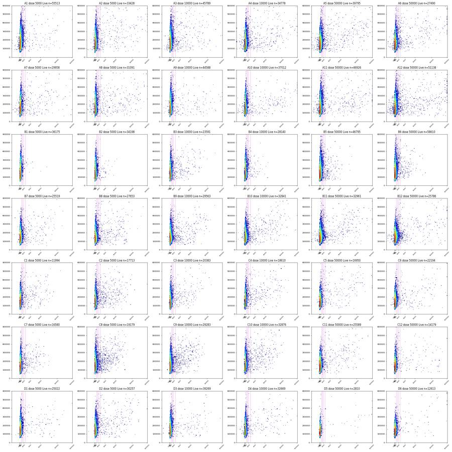
106
tool call · Bash
cd /task; cat > work/gfp_live2.py <<'EOF'
import numpy as np, pandas as pd, flowkit as fk
import matplotlib; matplotlib.use('Agg')
import matplotlib.pyplot as plt
from matplotlib.colors import LogNorm
from matplotlib.path import Path
lay = pd.read_csv('/task/inputs/plate_layout.csv')
P=Path(np.array([(45e3,125e3),(150e3,50e3),(330e3,80e3),(1.0e6,550e3),(1.0e6,1.0e6),(330e3,1.0e6),(120e3,600e3)]))
xf=fk.transforms.LogicleTransform(1048576,0.4,4.5,0)
ticks=np.array([-100,0,100,300,1000,3000,10000,100000,1e6])
ws=['B1','B2','B4','B5','B6','A1','A9','D3','B12','A6','C8','D5']
fig,axs=plt.subplots(3,12,figsize=(60,15))
cm=plt.get_cmap('turbo')
fig2,ax2=plt.subplots(1,2,figsize=(20,7))
for i,w in enumerate(lay.well):
e=np.load(f'work/npy/{w}.npy').astype(float)
c=P.contains_points(e[:,1:3]); r=e[:,2]/np.clip(e[:,7],1,None); s=c&(r<1.6)&(r>0.9); l=s&(e[:,4]<1000)
x=xf.apply(e[l,3])
h,b=np.histogram(x,bins=150,range=(0.05,1)); ax2[0].plot(b[:-1],h/l.sum(),color=cm(i/41),lw=.7,label=w); ax2[1].plot(b[:-1],np.cumsum(h[::-1])[::-1]/l.sum(),color=cm(i/41),lw=.7)
if w in ws:
j=ws.index(w)
axs[0,j].hist2d(x,e[l,2],bins=150,range=[[0.05,1],[0,500000]],norm=LogNorm(),cmap='jet'); axs[0,j].set_title(f'{w} Live BL1 vs SSC-A')
axs[1,j].hist2d(x,e[l,1],bins=150,range=[[0.05,1],[0,500000]],norm=LogNorm(),cmap='jet'); axs[1,j].set_title(f'{w} Live BL1 vs FSC-A')
axs[2,j].hist(x,bins=150,range=(0.05,1),histtype='step',color='k'); axs[2,j].set_yscale('log')
for a in axs[:,j]:
a.set_xticks(xf.apply(ticks)); a.set_xticklabels([f'{int(t)}' for t in ticks],fontsize=7,rotation=45)
for v in (600,800,1000): a.axvline(xf.apply(np.array([v]))[0],color='m',lw=.4)
for a in ax2:
a.set_yscale('log'); a.set_xticks(xf.apply(ticks)); a.set_xticklabels([f'{int(t)}' for t in ticks]); a.grid(alpha=.3)
for v in (600,800,1000): a.axvline(xf.apply(np.array([v]))[0],color='m',lw=.4)
ax2[0].legend(ncol=6,fontsize=6); ax2[1].set_title('fraction of Live above x')
fig.tight_layout(); fig.savefig('work/gfp_live2.png',dpi=40); fig2.tight_layout(); fig2.savefig('work/gfp_live_1d.png',dpi=60)
EOF
python3 -I work/gfp_live2.py107
tool call · Read
{
"file_path": "/task/work/gfp_live2.png"
}108
tool call · Read
{
"file_path": "/task/work/gfp_live_1d.png"
}109
tool output
(Bash completed with no output)
110
tool output
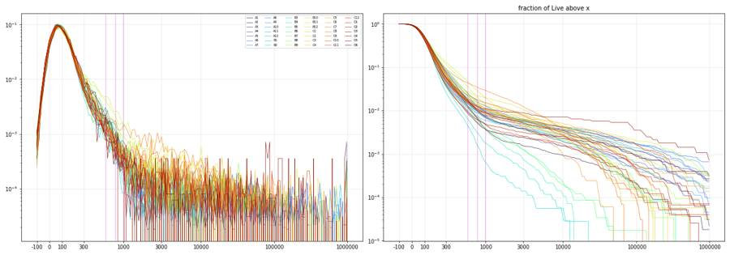
111
tool output
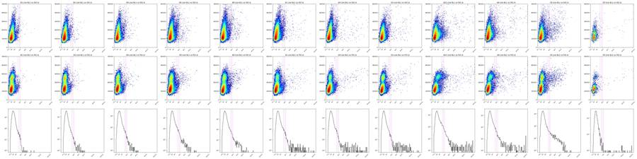
113
tool call · Bash
cd /task; cat > work/gate.py <<'EOF'
import flowkit as fk, numpy as np, pandas as pd, io
lay = pd.read_csv('/task/inputs/plate_layout.csv')
U='uncompensated'
gs=fk.GatingStrategy()
cells=[(45e3,125e3),(150e3,50e3),(330e3,80e3),(1.0e6,550e3),(1.0e6,1.0e6),(330e3,1.0e6),(120e3,600e3)]
gs.add_gate(fk.gates.PolygonGate('Cells',[fk.Dimension('FSC-A',U),fk.Dimension('SSC-A',U)],cells),('root',))
sing=[(0.0,0.0),(1144444.0,1030000.0),(643750.0,1030000.0)] # 0.9 <= SSC-A/SSC-H <= 1.6
gs.add_gate(fk.gates.PolygonGate('Singlets',[fk.Dimension('SSC-H',U),fk.Dimension('SSC-A',U)],sing),('root','Cells'))
gs.add_gate(fk.gates.RectangleGate('Live',[fk.Dimension('RL3-A',U,range_min=None,range_max=1000.0),fk.Dimension('SSC-A',U,range_min=0.0,range_max=1048576.0)]),('root','Cells','Singlets'))
gs.add_gate(fk.gates.RectangleGate('GFP_pos',[fk.Dimension('BL1-A',U,range_min=1000.0,range_max=None),fk.Dimension('SSC-A',U,range_min=0.0,range_max=1048576.0)]),('root','Cells','Singlets','Live'))
with open('/task/outputs/gates.xml','wb') as fh: fk.export_gatingml(gs,fh)
gs2=fk.parse_gating_xml('/task/outputs/gates.xml')
print(gs2.get_gate_ids())
pops=['Cells','Singlets','Live','GFP_pos']; parent={'Cells':'all_events','Singlets':'Cells','Live':'Singlets','GFP_pos':'Live'}
rows=[]
for f,w in zip(lay.file,lay.well):
s=fk.Sample('/task/inputs/raw/'+f)
res=gs2.gate_sample(s); rep=res.report.set_index('gate_name')
n={'all_events':s.event_count}
for p in pops: n[p]=int(rep.loc[p,'count'])
for p in pops:
pc=n[parent[p]]
rows.append(dict(file=f,well=w,population=p,count=n[p],parent_population=parent[p],pct_of_parent=round(100*n[p]/pc,4) if pc else 0.0))
df=pd.DataFrame(rows); df.to_csv('/task/outputs/counts.csv',index=False)
wide=df.pivot(index='well',columns='population',values='count').loc[lay.well,pops]
wide['total']=[fk.Sample('/task/inputs/raw/'+f).event_count for f in lay.file] if False else df[df.population=='Cells'].set_index('well').apply(lambda r: round(r['count']*100/r['pct_of_parent']),axis=1)
wide['dose']=lay.set_index('well').dose_vg_per_cell
wide['%cells']=100*wide.Cells/wide.total; wide['%sing']=100*wide.Singlets/wide.Cells; wide['%live']=100*wide.Live/wide.Singlets; wide['%gfp']=100*wide.GFP_pos/wide.Live
pd.set_option('display.width',250); print(wide.round(2).to_string())
wide.to_csv('/task/work/wide.csv')
EOF
python3 -I work/gate.py 2>&1 | grep -v Warning114
tool output
[('Cells', ('root',)), ('Singlets', ('root', 'Cells')), ('Live', ('root', 'Cells', 'Singlets')), ('GFP_pos', ('root', 'Cells', 'Singlets', 'Live'))]
population Cells Singlets Live GFP_pos total dose %cells %sing %live %gfp
well
A1 632876 434438 55513 201 978727 5000 64.66 68.65 12.78 0.36
A2 582276 460435 33428 257 935706 5000 62.23 79.08 7.26 0.77
A3 580054 465136 45789 320 925910 10000 62.65 80.19 9.84 0.70
A4 569717 454856 34778 321 892331 10000 63.85 79.84 7.65 0.92
A5 620119 488849 39795 384 986514 50000 62.86 78.83 8.14 0.96
A6 481012 400615 27490 345 755396 50000 63.68 83.29 6.86 1.26
A7 507879 402700 29958 205 848859 5000 59.83 79.29 7.44 0.68
A8 440957 364177 31091 254 710140 5000 62.09 82.59 8.54 0.82
A9 558069 421225 44588 163 958680 10000 58.21 75.48 10.59 0.37
A10 526135 413764 37012 221 870505 10000 60.44 78.64 8.95 0.60
A11 496295 404735 46926 320 844586 50000 58.76 81.55 11.59 0.68
A12 566866 450372 51138 505 947510 50000 59.83 79.45 11.35 0.99
B1 392933 308044 36175 24 733753 5000 53.55 78.40 11.74 0.07
B2 394343 310652 34197 59 728885 5000 54.10 78.78 11.01 0.17
B3 366704 302527 23591 208 667298 10000 54.95 82.50 7.80 0.88
B4 324965 275208 28140 106 598212 10000 54.32 84.69 10.22 0.38
B5 479383 387552 46795 226 837561 50000 57.24 80.84 12.07 0.48
B6 494952 394616 58610 229 877336 50000 56.42 79.73 14.85 0.39
B7 553601 434453 25519 186 954909 5000 57.97 78.48 5.87 0.73
B8 531373 422580 27653 299 918777 5000 57.83 79.53 6.54 1.08
B9 509885 409231 29563 327 862070 10000 59.15 80.26 7.22 1.11
B10 638918 496412 32841 345 1083648 10000 58.96 77.70 6.62 1.05
B11 579544 463296 32961 449 988575 50000 58.62 79.94 7.11 1.36
B12 526262 425855 25786 510 904103 50000 58.21 80.92 6.06 1.98
C1 339037 294483 11994 185 624718 5000 54.27 86.86 4.07 1.54
C2 378175 320770 17713 352 695572 5000 54.37 84.82 5.52 1.99
C3 349340 289712 20383 172 656321 10000 53.23 82.93 7.04 0.84
C4 380704 321701 18610 243 679505 10000 56.03 84.50 5.78 1.31
C5 387894 331282 16950 183 689593 50000 56.25 85.41 5.12 1.08
C6 503474 409392 22194 179 891011 50000 56.51 81.31 5.42 0.81
C7 333719 283182 16580 190 649735 5000 51.36 84.86 5.85 1.15
C8 343769 293528 19179 562 639518 5000 53.75 85.39 6.53 2.93
C9 455073 369585 29283 446 801299 10000 56.79 81.21 7.92 1.52
C10 544711 434165 32876 335 927161 10000 58.75 79.71 7.57 1.02
C11 507700 410936 25589 227 868684 50000 58.44 80.94 6.23 0.89
C12 328641 284865 14179 127 578214 50000 56.84 86.68 4.98 0.90
D1 447663 369138 25022 118 800840 5000 55.90 82.46 6.78 0.47
D2 518563 421383 30257 266 894591 5000 57.97 81.26 7.18 0.88
D3 519288 407695 39269 147 915097 10000 56.75 78.51 9.63 0.37
D4 545335 434529 32669 163 925805 10000 58.90 79.68 7.52 0.50
D5 82848 79877 2810 31 153195 50000 54.08 96.41 3.52 1.10
D6 415247 355057 12613 94 726651 50000 57.15 85.51 3.55 0.75116
thinking
Gates are saved and first-pass counts are written; now I'm running the time-resolved QC on the unstable stretches in B7/B8, the end-of-run declines, and wells A1 and D5.
117
tool call · Bash
cd /task; cat > work/qc_seg.py <<'EOF'
import numpy as np, pandas as pd
from matplotlib.path import Path
lay = pd.read_csv('/task/inputs/plate_layout.csv')
P=Path(np.array([(45e3,125e3),(150e3,50e3),(330e3,80e3),(1.0e6,550e3),(1.0e6,1.0e6),(330e3,1.0e6),(120e3,600e3)]))
np.set_printoptions(linewidth=250,suppress=True)
import sys
sel=sys.argv[1:] or list(lay.well)
bw=float(5)
for w in sel:
e=np.load(f'work/npy/{w}.npy').astype(float); t=e[:,0]
c=P.contains_points(e[:,1:3]); r=e[:,2]/np.clip(e[:,7],1,None); s=c&(r<=1.6)&(r>=0.9); l=s&(e[:,4]<1000); g=l&(e[:,3]>=1000)
edges=np.arange(0,t.max()+bw,bw); idx=np.digitize(t,edges)-1
nb=len(edges)-1
def cnt(m): return np.bincount(idx[m],minlength=nb)[:nb].astype(float)
n=cnt(np.ones(len(t),bool)); nc=cnt(c); ns=cnt(s); nl=cnt(l); ng=cnt(g)
print(w, 'bin',bw,'s')
print(' rate/s ',(n/bw).round(0))
print(' %cells ',(100*nc/n).round(1))
print(' %sing ',(100*ns/nc).round(1))
print(' %live ',(100*nl/ns).round(1))
print(' %gfp ',(100*ng/np.maximum(nl,1)).round(2))
print(' medRL3c',np.array([np.median(e[c&(idx==i),4]) if (c&(idx==i)).sum()>20 else np.nan for i in range(nb)]).round(0))
print(' medFSCc',np.array([np.median(e[c&(idx==i),1]) if (c&(idx==i)).sum()>20 else np.nan for i in range(nb)]).round(-3)/1000)
EOF
python3 -I work/qc_seg.py B7 B8 B9 A1 D5 C3 C4 C10 B4118
tool output
B7 bin 5.0 s rate/s [ 2243. 7294. 7868. 13022. 11572. 11881. 13665. 10628. 10663. 10063. 10103. 8626. 9012. 9907. 9758. 9943. 10771. 9889. 8811. 5263.] %cells [50.1 54.2 53.4 61.1 56.4 57.3 54.8 58.1 59.7 60. 60.5 58.4 60.5 59.4 58.2 58.2 59.9 58.1 55.8 57.5] %sing [90.5 87.6 87.6 85.4 86.7 85.5 76.1 75.8 75.1 73.4 73.1 73.2 74.5 73.5 75.6 76.5 77. 78.1 77.3 77.5] %live [6.6 6.5 6.1 6.2 6. 6.2 5.8 5.9 5.6 5.7 5.9 5.9 5.9 5.6 5.9 5.5 5.7 5.8 5.8 5.5] %gfp [0.6 0.71 0.62 0.62 0.94 1. 0.73 0.8 0.3 0.71 0.68 0.73 0.5 0.41 0.71 0.66 1.35 0.85 0.54 0.78] medRL3c [11669. 11936. 12000. 12506. 11981. 12286. 12863. 13035. 13228. 13321. 13429. 13003. 13332. 13304. 12828. 13028. 13366. 12931. 12559. 12495.] medFSCc [144. 142. 140. 141. 139. 143. 154. 156. 157. 158. 159. 158. 158. 157. 156. 156. 157. 155. 154. 154.] B8 bin 5.0 s rate/s [ 1847. 8963. 13248. 10453. 10055. 10046. 10083. 10123. 10237. 10186. 9879. 9312. 9311. 9435. 9365. 10106. 9972. 8712. 9095. 3327.] %cells [45.5 51.3 57.6 54.6 55.4 57.7 59. 59.7 60.6 60.6 60.7 59.5 59.6 59.3 58.3 59.8 60.2 55.7 56.1 48.7] %sing [90.6 82.8 81.9 81.5 80.2 79.4 78.4 77.5 77.2 76.7 77. 77.7 77.8 78.3 79.7 79.8 79.9 81.2 81. 88.9] %live [6.1 7.2 6.3 6.5 6.6 6.4 6.2 6.6 6.2 6.3 6.5 6.5 6.5 6.6 6.7 6.4 6.5 7.1 7.1 6.1] %gfp [0.43 1.09 0.66 1.05 1.08 1.21 1.11 0.91 1.15 1.07 1.33 1.14 0.99 1.24 1.45 1.09 1.54 0.79 0.89 0.68] medRL3c [10920. 11234. 12000. 11553. 11852. 12076. 12278. 12290. 12358. 12459. 12453. 12239. 12234. 12087. 12090. 12215. 12227. 11698. 11430. 10742.] medFSCc [144. 150. 149. 152. 155. 157. 158. 159. 160. 161. 160. 160. 160. 159. 158. 159. 158. 156. 155. 149.] B9 bin 5.0 s rate/s [7916. 9252. 8656. 8680. 9017. 9027. 9115. 9200. 9191. 9127. 9113. 8601. 8334. 8427. 8577. 8498. 9212. 9225. 7901. 5345.] %cells [56.1 54.7 54.9 56.7 58. 58.1 58.8 59.7 60.5 61.3 61.6 61.2 60.9 61. 60.2 59.4 60.9 61.8 57.2 59.6] %sing [86.3 83.1 83. 81.9 81.2 80.5 80.1 79.5 79. 78.2 77.6 77.4 79.1 79. 79.3 80.4 80.7 79.9 80.8 79.7] %live [7.9 7.7 7.4 7.3 7.3 7.1 6.7 6.9 7.1 7.2 7.1 7.2 7.4 7.1 7.2 7.2 7.1 7.1 7.3 7.3] %gfp [1.25 1.18 1.09 1.22 1.16 1.4 0.76 1.25 0.96 1.21 1.1 1.36 1.49 0.69 0.95 0.89 0.99 1.17 1.06 0.76] medRL3c [11848. 12313. 12204. 12652. 12783. 12890. 12914. 13124. 13123. 13142. 13208. 13408. 13085. 13116. 13089. 12795. 13249. 13297. 12744. 12792.] medFSCc [153. 154. 153. 155. 156. 156. 156. 157. 159. 159. 159. 160. 160. 160. 159. 157. 157. 160. 157. 157.] A1 bin 5.0 s rate/s [22264. 22016. 21917. 21691. 21990. 21391. 20325. 19958. 19191. 5001.] %cells [62. 63.5 64. 65.2 66.3 66.3 65.9 65.3 63.5 64.4] %sing [70.4 69.5 68.8 67.7 66.8 67.1 68. 69.1 70.6 69.1] %live [12.9 13.1 12.8 12.8 12.4 12.8 12.8 12.8 12.7 12.8] %gfp [0.38 0.36 0.37 0.31 0.41 0.48 0.34 0.31 0.31 0.21] medRL3c [7915. 8104. 8205. 8335. 8524. 8432. 8342. 8211. 8100. 8174.] medFSCc [159. 161. 162. 164. 166. 166. 165. 164. 162. 163.] D5 bin 5.0 s rate/s [1304. 1663. 1567. 1608. 1650. 1633. 1628. 1639. 1640. 1656. 1658. 1597. 1520. 1526. 1518. 1506. 1525. 1631. 1431. 739.] %cells [55.3 52. 50.5 51.9 52.6 53.6 54.2 54. 54.7 55.3 55.3 56. 56.7 54.8 55. 53.1 54.2 55.6 54.7 50.1] %sing [97.2 97.1 97.2 97.1 96.8 96.6 95.9 97. 95.5 94.8 94.8 94.8 95.6 97.1 97.2 97.3 96.7 96.9 96.7 96.7] %live [3.2 3.5 3.2 4.1 3.4 3.4 3.5 3.1 3.7 3.7 3.5 3.5 3.4 4.3 3.7 3.4 3.9 3.2 3.4 2.8] %gfp [0.88 1.35 0. 1.82 1.41 0.69 0. 0. 0. 0.62 1.95 2.01 0.71 0. 2.01 1.53 1.91 2.13 2.36 0. ] medRL3c [16334. 16459. 16394. 16478. 16352. 16752. 16306. 16830. 16337. 16532. 16624. 16580. 16414. 16210. 16242. 16584. 16047. 17078. 16949. 15774.] medFSCc [142. 141. 139. 140. 138. 140. 140. 141. 144. 145. 146. 147. 145. 143. 142. 142. 141. 142. 140. 139.] C3 bin 5.0 s rate/s [6475. 7517. 6941. 6965. 7066. 7123. 7081. 7185. 7114. 7180. 6982. 6499. 6719. 6593. 6617. 7098. 6597. 6572. 5399. 1542.] %cells [50.7 48.3 48.7 51.2 51.7 52.6 53.8 55.1 56.6 57.1 56.3 55.7 55.8 55.3 54.1 56.1 54.8 50.6 50.6 35. ] %sing [88.2 86. 85.1 84.7 83.8 83.5 82.5 81.1 80. 78.9 80.1 80.3 81.3 81.2 82.8 82.8 83.5 83.6 87.6 95.5] %live [8.3 7.6 7. 7.2 7.3 6.8 6.8 6.8 6.9 6.7 7.1 7.1 7.5 6.7 6.8 6.6 6.7 7.2 7. 5. ] %gfp [1. 0.76 0.7 0.74 0.81 0.85 1.03 0.64 0.9 0.83 0.98 1.25 0.87 0.8 0.89 0.82 0.7 0.7 0.71 0.77] medRL3c [13582. 13694. 13849. 14196. 14347. 14344. 14712. 14711. 14826. 15092. 14710. 14724. 14506. 14574. 14232. 14589. 14782. 13814. 13653. 13066.] medFSCc [151. 150. 150. 151. 151. 152. 152. 154. 156. 158. 157. 158. 156. 156. 155. 156. 155. 153. 150. 138.] C4 bin 5.0 s rate/s [6890. 7760. 7206. 7136. 7282. 7276. 7321. 7312. 7374. 7317. 6994. 6798. 7092. 6937. 6948. 7326. 6827. 6333. 5823. 1947.] %cells [55.1 53. 52. 54.6 55. 55.9 56.4 57.2 58.2 59. 58.7 57.7 57.9 57.3 56.4 58.1 57.5 52.9 54.4 44. ] %sing [88.2 86.3 86.3 86.5 84.9 84.2 83.3 82.9 82. 82. 82.5 82.9 82.9 84.1 84.8 84.4 84.4 85.1 87.5 93.5] %live [6.5 6.1 6. 5.9 6. 5.6 5.4 5.6 5.8 5.7 5.6 5.8 5.6 5.7 5.9 5.5 5.6 5.9 6.1 4.6] %gfp [1.75 1.3 1.03 0.81 0.78 1.76 1.39 1.02 1.46 1.69 1.8 1.06 0.95 1.9 0.41 1.42 1.51 1.54 1.19 1.63] medRL3c [11742. 11874. 11852. 12203. 12206. 12619. 12766. 12660. 12581. 12693. 12736. 12534. 12582. 12405. 12246. 12795. 12571. 11933. 11838. 11230.] medFSCc [150. 148. 149. 149. 149. 151. 151. 153. 153. 153. 154. 154. 153. 152. 151. 153. 152. 150. 148. 141.] C10 bin 5.0 s rate/s [ 9619. 10608. 9721. 9756. 9877. 10033. 10024. 10100. 10072. 10108. 9729. 9408. 9338. 9443. 9252. 9714. 9170. 8813. 8023. 2627.] %cells [57.6 56. 55.7 57.3 57.8 58.5 59.6 60.8 61.2 61.8 60.3 60.6 59.8 60.4 59.3 60.5 60. 56.2 56.7 42.3] %sing [83.8 81. 80.7 80.6 80.2 79.3 78.9 77.7 77.4 77.8 77.7 78.7 78.4 78.9 80. 79.7 80.1 80. 82.3 91.8] %live [8.4 8.3 7.9 7.5 7.3 7.5 7.1 7.5 7.3 7.4 7.3 7.6 7.5 7.7 7.4 … [1,233 more characters not shown]
120
tool call · Bash
cd /task; cat > work/dup.py <<'EOF'
import numpy as np, pandas as pd
from matplotlib.path import Path
lay = pd.read_csv('/task/inputs/plate_layout.csv')
P=Path(np.array([(45e3,125e3),(150e3,50e3),(330e3,80e3),(1.0e6,550e3),(1.0e6,1.0e6),(330e3,1.0e6),(120e3,600e3)]))
rows=[]
for w,dose in zip(lay.well,lay.dose_vg_per_cell):
e=np.load(f'work/npy/{w}.npy').astype(float)
c=P.contains_points(e[:,1:3]); r=e[:,2]/np.clip(e[:,7],1,None); s=c&(r<=1.6)&(r>=0.9); l=s&(e[:,4]<1000); b=e[:,3]
hi=l&(e[:,5]>15000)
rows.append(dict(well=w,dose=dose,live=l.sum(),g1k=(l&(b>=1000)).sum(),g3k=(l&(b>=3000)).sum(),g10k=(l&(b>=10000)).sum(),g100k=(l&(b>=100000)).sum(),
pct1k=100*(l&(b>=1000)).sum()/l.sum(),pct3k=100*(l&(b>=3000)).sum()/l.sum(),pct10k=100*(l&(b>=10000)).sum()/l.sum(),
sing_pct3k=100*(s&(b>=3000)).sum()/s.sum(), sing_pct30k=100*(s&(b>=30000)).sum()/s.sum(), all_n30k=(b>=30000).sum(), all_pct30k=100*(b>=30000).mean(),
ncamhi_live=hi.sum(), ncamhi_pct1k=100*(hi&(b>=1000)).sum()/hi.sum(), ncamhi_medBL1=np.median(b[hi]), gfp_sat=(l&(b>=1048575)).sum()))
df=pd.DataFrame(rows); pd.set_option('display.width',250); print(df.round(3).to_string())
EOF
python3 -I work/dup.py121
tool output
well dose live g1k g3k g10k g100k pct1k pct3k pct10k sing_pct3k sing_pct30k all_n30k all_pct30k ncamhi_live ncamhi_pct1k ncamhi_medBL1 gfp_sat 0 A1 5000 55513 201 85 52 12 0.362 0.153 0.094 0.075 0.012 242 0.025 7770 0.373 140.0 1 1 A2 5000 33428 257 161 114 39 0.769 0.482 0.341 0.120 0.021 303 0.032 9515 0.652 140.0 7 2 A3 10000 45789 320 168 89 22 0.699 0.367 0.194 0.180 0.024 294 0.032 7894 0.760 146.0 1 3 A4 10000 34778 321 193 128 34 0.923 0.555 0.368 0.184 0.032 454 0.051 8230 1.203 153.0 8 4 A5 50000 39795 384 234 164 69 0.965 0.588 0.412 0.189 0.040 570 0.058 8363 1.806 162.0 10 5 A6 50000 27490 345 176 117 45 1.255 0.640 0.426 0.225 0.043 476 0.063 7518 2.221 169.0 17 6 A7 5000 29958 205 121 69 19 0.684 0.404 0.230 0.116 0.017 231 0.027 8819 0.601 127.0 2 7 A8 5000 31091 254 172 113 37 0.817 0.553 0.363 0.183 0.031 307 0.043 9233 0.672 129.0 3 8 A9 10000 44588 163 106 69 18 0.366 0.238 0.155 0.099 0.019 243 0.025 8241 0.449 123.0 2 9 A10 10000 37012 221 144 105 34 0.597 0.389 0.284 0.125 0.026 300 0.034 11005 0.627 131.0 6 10 A11 50000 46926 320 204 165 65 0.682 0.435 0.352 0.179 0.043 432 0.051 10013 0.889 134.0 13 11 A12 50000 51138 505 294 208 88 0.988 0.575 0.407 0.230 0.049 683 0.072 8272 1.789 148.0 18 12 B1 5000 36175 24 5 2 0 0.066 0.014 0.006 0.003 0.000 3 0.000 11749 0.060 112.0 0 13 B2 5000 34198 59 15 1 0 0.173 0.044 0.003 0.006 0.000 4 0.001 10610 0.179 115.0 0 14 B3 10000 23591 208 119 46 4 0.882 0.504 0.195 0.049 0.009 88 0.013 8721 0.757 121.0 0 15 B4 10000 28140 106 21 3 0 0.377 0.075 0.011 0.010 0.000 9 0.002 6877 0.393 123.0 0 16 B5 50000 46795 226 59 11 0 0.483 0.126 0.024 0.017 0.001 19 0.002 9977 0.491 133.0 0 17 B6 50000 58610 229 72 12 1 0.391 0.123 0.020 0.023 0.001 46 0.005 12827 0.577 130.0 0 18 B7 5000 25519 186 90 53 4 0.729 0.353 0.208 0.038 0.007 111 0.012 9508 0.431 137.0 0 19 B8 5000 27653 299 173 92 5 1.081 0.626 0.333 0.076 0.011 146 0.016 8908 1.224 150.0 0 20 B9 10000 29563 327 151 80 6 1.106 0.511 0.271 0.080 0.010 155 0.018 10289 1.137 147.0 0 21 B10 10000 32841 345 190 106 18 1.051 0.579 0.323 0.087 0.015 343 0.032 8804 1.681 155.0 1 22 B11 50000 32961 449 198 136 36 1.362 0.601 0.413 0.112 0.025 432 0.044 8545 3.078 178.0 6 23 B12 50000 25786 510 167 111 53 1.978 0.648 0.430 0.174 0.037 595 0.066 8557 3.950 178.0 7 24 C1 5000 11994 185 98 40 1 1.542 0.817 0.334 0.047 0.003 36 0.006 5721 1.206 128.0 0 25 C2 5000 17713 352 188 78 2 1.987 1.061 0.440 0.080 0.009 109 0.016 7834 1.800 133.0 1 26 C3 10000 20383 172 98 47 2 0.844 0.481 0.231 0.047 0.008 81 0.012 7703 0.961 124.0 0 27 C4 10000 18610 243 147 74 7 1.306 0.790 0.398 0.062 0.013 140 0.021 7655 0.980 136.0 0 28 C5 50000 16950 183 121 87 27 1.080 0.714 0.513 0.105 0.022 208 0.030 6521 0.843 141.0 5 29 C6 50000 22194 179 96 59 21 0.807 0.433 0.266 0.097 0.018 268 0.030 7361 0.842 151.0 3 30 C7 5000 16580 190 73 15 0 1.146 0.440 0.090 0.032 0.001 19 0.003 7647 1.308 125.0 0 31 C8 5000 19179 562 237 73 3 2.930 1.236 0.381 0.099 0.005 58 0.009 7243 2.720 132.0 0 32 C9 10000 29283 446 225 83 0 1.523 0.768 0.283 0.073 0.005 104 0.013 9251 2.119 129.0 0 33 C10 10000 32876 335 196 88 3 1.019 0.596 0.268 0.065 0.008 146 0.016 8747 1.223 139.0 0 34 C11 50000 25589 227 133 87 11 0.887 0.520 0.340 0.052 0.012 212 0.024 8917 1.088 145.0 0 35 C12 50000 14179 127 87 59 23 0.896 0.614 … [1,094 more characters not shown]
123
agent
Gating is fixed; remaining work is the flags table and notes. Pulling exact per-well QC numbers (rate profile, start/end rates, scale-max pile-up) for the evidence column now.
124
tool call · Bash
cd /task; cat > work/qc_final.py <<'EOF'
import numpy as np, pandas as pd
lay = pd.read_csv('/task/inputs/plate_layout.csv')
np.set_printoptions(linewidth=250,suppress=True)
rows=[]
for w in lay.well:
e=np.load(f'work/npy/{w}.npy'); t=e[:,0]; T=t.max()
nfull=int(np.floor(T))
h,_=np.histogram(t,bins=np.arange(0,nfull+1,1.0)) # full 1-s bins only
med=np.median(h)
last5=((t>T-5)).sum()/5.0; last2=(t>T-2).sum()/2.0; first5=(t<5).sum()/5.0
low=np.where(h<0.5*med)[0]; high=np.where(h>1.4*med)[0]
sat=100*((e[:,1]>=1048575)|(e[:,2]>=1048575)).mean()
satfl=100*((e[:,3]>=1048575)|(e[:,4]>=1048575)|(e[:,5]>=1048575)).mean()
rows.append(dict(well=w,total=len(t),dur=round(float(T),1),med_rate=int(med),first5=int(first5),last5=int(last5),last2=int(last2),min_rate=int(h.min()),t_min=int(h.argmin()),max_rate=int(h.max()),t_max=int(h.argmax()),
low_bins=','.join(map(str,low)),high_bins=','.join(map(str,high)),cv=round(h.std()/h.mean(),3),sat_scatter=round(sat,2),sat_fl=round(satfl,3),bl1_sat=int((e[:,3]>=1048575).sum())))
if w in ('B7','B8'):
print(w,'1-s rates 0-40 s:',h[:40]); print(' 60-64:',h[58:66])
df=pd.DataFrame(rows); pd.set_option('display.width',300); print(df.to_string()); df.to_csv('work/qc_final.csv',index=False)
print(df[['total','med_rate','first5','last5','last2','cv','sat_scatter']].describe().round(2))
print((df.last5/df.med_rate).round(2).tolist()); print((df.last2/df.med_rate).round(2).tolist()); print((df.first5/df.med_rate).round(2).tolist())
EOF
python3 -I work/qc_final.py125
tool output
B7 1-s rates 0-40 s: [ 312 1784 1782 1821 5517 6581 4917 6822 8594 9558 8165 6766 5301 5149 13961 13981 13534 12951 12634 12010 11906 11683 11635 11366 11272 11228 11216 11192 11099 14671 17476 16078 12973 10943 10853 10773 10834 10200 10448 10885] 60-64: [ 7629 7831 8400 3885 10734 11839 10202 10850] B8 1-s rates 0-40 s: [ 646 92 34 2202 6262 6101 5643 6008 11868 15194 14707 14229 13547 12266 11491 10976 10712 10268 10205 10103 10218 10095 10026 10089 9846 9990 10050 10154 10009 10028 9962 10143 10071 10075 10164 10237 10155 10094 10135 9992] 60-64: [9107 9125 9196 9351 9241 9391 9375 9569] well total dur med_rate first5 last5 last2 min_rate t_min max_rate t_max low_bins high_bins cv sat_scatter sat_fl bl1_sat 0 A1 978726 46.2 21595 22263 19174 19672 17413 43 22801 1 0.054 1.18 0.001 8 1 A2 935707 97.9 9736 9663 8250 7385 7499 95 10799 7 0.059 0.50 0.002 21 2 A3 925910 97.7 9731 9464 7541 6125 6134 96 10654 7 0.078 0.47 0.002 17 3 A4 892332 97.7 9275 8516 8285 8374 7735 92 10070 7 0.055 0.53 0.007 64 4 A5 986514 97.9 10269 9694 9072 9761 7319 93 11297 7 0.060 0.61 0.010 95 5 A6 755396 97.1 7917 7429 6884 7257 5864 92 8592 7 0.063 0.35 0.011 82 6 A7 848859 97.9 8848 8193 7729 7795 6996 93 9594 6 0.057 0.53 0.003 23 7 A8 710140 97.9 7376 5789 6483 6839 5351 1 7962 88 0.072 0.44 0.006 38 8 A9 958681 97.8 9968 9608 8815 9360 7823 91 10923 6 0.057 1.09 0.002 19 9 A10 870505 97.7 9119 9176 6795 5582 5696 96 10137 5 0.081 0.64 0.004 30 10 A11 844586 97.9 8749 8110 8155 8800 7212 93 9747 85 0.055 0.38 0.008 65 11 A12 947510 97.9 9856 9850 7413 5607 6004 96 11012 5 0.076 0.55 0.011 106 12 B1 733754 97.9 7648 6830 7456 7891 5352 92 8350 7 0.062 0.48 0.000 0 13 B2 728886 97.9 7525 7066 7256 7555 6130 92 8294 8 0.057 0.54 0.000 0 14 B3 667298 97.9 6958 6158 6315 6685 5716 2 7468 84 0.060 0.35 0.000 0 15 B4 598212 97.9 6291 5953 4139 3246 3531 96 6960 7 0.084 0.32 0.001 0 16 B5 837561 97.9 8770 8407 6117 5147 5479 96 9646 7 0.078 0.41 0.000 0 17 B6 877336 97.8 9071 8971 6052 4792 5269 96 10142 7 0.078 0.48 0.000 1 18 B7 954909 97.9 10200 2243 8912 9336 312 0 17476 30 0,1,2,3,6,61 29,30,31 0.277 0.56 0.001 0 19 B8 918778 97.8 9976 1847 6992 5799 34 2 15194 9 0,1,2,3 9,10,11 0.247 0.37 0.000 1 20 B9 862070 98.0 8865 7916 8682 9205 7352 92 9867 96 0.054 0.40 0.001 3 21 B10 1083648 97.8 11374 11272 7676 6273 6725 96 12541 5 0.081 0.61 0.001 10 22 B11 988574 97.9 10305 10019 7466 6286 6908 96 11430 6 0.074 0.44 0.004 40 23 B12 904103 97.8 9356 8630 8850 8594 7958 91 10284 7 0.050 0.38 0.012 104 24 C1 624718 97.8 6452 5714 6233 6469 5270 92 7068 7 0.052 0.15 0.000 0 25 C2 695572 97.8 7296 6684 4616 3780 4117 96 7898 6 0.087 0.20 0.001 2 26 C3 656321 97.7 6955 6475 3589 2487 2687 96 7636 8 96 0.110 0.29 0.000 1 27 C4 679504 97.8 7153 6890 4105 3206 3418 96 7826 7 96 0.098 0.20 0.000 0 28 C5 689593 97.9 7138 6325 6912 7196 5835 0 7691 7 0.053 0.18 0.003 13 29 C6 891011 97.6 9307 10033 6052 5079 4953 96 14018 3 3 0.102 0.31 0.003 27 30 C7 649735 97.9 6684 5870 6723 6340 5463 1 7350 8 0.047 0.19 0.001 0 31 C8 639518 97.9 6612 5757 6312 6626 5175 92 7167 8 0.058 0.24 0.000 0 32 C9 801299 97.9 8282 7273 7976 7769 6717 0 8806 47 0.057 0.32 0.000 0 33 C10 927162 97.5 9771 9618 5865 5000 5159 96 10901 6 0.097 0.41 0.000 0 34 C11 868685 97.5 9036 9274 7848 7751 7641 96 12986 3 3 … [2,538 more characters not shown]
127
tool call · Bash
cd /task; cat > work/flags.py <<'EOF'
import numpy as np, pandas as pd
lay = pd.read_csv('/task/inputs/plate_layout.csv')
q=pd.read_csv('work/qc_final.csv').set_index('well')
c=pd.read_csv('outputs/counts.csv')
wide=c.pivot(index='well',columns='population',values='count')
pct=c.pivot(index='well',columns='population',values='pct_of_parent')
# cross-check FlowKit counts against independent numpy gating
from matplotlib.path import Path
P=Path(np.array([(45e3,125e3),(150e3,50e3),(330e3,80e3),(1.0e6,550e3),(1.0e6,1.0e6),(330e3,1.0e6),(120e3,600e3)]))
S=Path(np.array([(0.0,0.0),(1144444.0,1030000.0),(643750.0,1030000.0)]))
mism=0
for w in lay.well:
e=np.load(f'work/npy/{w}.npy').astype(float)
cc=P.contains_points(e[:,1:3]); s=cc&S.contains_points(e[:,[7,2]]); l=s&(e[:,4]<1000); g=l&(e[:,3]>=1000)
d=[abs(cc.sum()-wide.loc[w,'Cells']),abs(s.sum()-wide.loc[w,'Singlets']),abs(l.sum()-wide.loc[w,'Live']),abs(g.sum()-wide.loc[w,'GFP_pos'])]
if max(d)>0: mism+=1; print('diff',w,d)
print('wells with numpy/FlowKit differences:',mism)
extra={
'A1':' Acquired at 200 uL/min for 46 s (all other wells 100 uL/min for ~98 s), so its rate is 2.2x the plate median; rate is steady and gated fractions are flat over time, so kept, but it has the lowest Singlets fraction on the plate.',
'B3':' Note: 46 Live events with BL1-A >= 10,000 versus 3 in its duplicate B4 and 11-12 in the 5x-dose wells B5/B6; GFP_pos % (0.88 vs 0.38 in B4) is within the duplicate spread seen elsewhere on the plate, so kept.',
'D5':' Lowest event count on the plate (next lowest 578,214) at a steady rate with the same 163 uL acquired, i.e. a sparse sample; Live and GFP_pos counts are small (binomial 95% CI on GFP_pos about 0.75-1.56% of Live), but fractions match duplicate D6, so kept.',
}
rows=[]
for f,w in zip(lay.file,lay.well):
r=q.loc[w]; n=wide.loc[w]
base=(f"total {int(r.total):,} events; Cells {int(n.Cells):,}, Singlets {int(n.Singlets):,}, Live {int(n.Live):,}, GFP_pos {int(n.GFP_pos):,} ({pct.loc[w,'GFP_pos']:.2f}% of Live); "
f"median rate {int(r.med_rate):,} ev/s over {r.dur} s (1-s bin CV {r.cv:.2f}); slowest full second {int(r.min_rate):,} ev/s at {int(r.t_min)} s, fastest {int(r.max_rate):,} ev/s at {int(r.t_max)} s; "
f"last 5 s at {100*r.last5/r.med_rate:.0f}% of median; {r.sat_scatter:.2f}% of events at scatter scale maximum, {int(r.bl1_sat)} events at BL1-A maximum.")
usable,cat,ev='yes','ok',base
if 100*r.last2/r.med_rate<65 and w not in ('B7','B8'):
ev+=f" Rate tapers in the final seconds (last 2 s at {100*r.last2/r.med_rate:.0f}% of median) but never stops; this affects under 3% of events and is shared by 13 wells, so kept."
if w in extra: ev+=extra[w]
if w=='B7':
usable,cat='no','clog_or_interrupted_flow'
ev=(f"total {int(r.total):,} events; Cells {int(n.Cells):,}, Singlets {int(n.Singlets):,}, Live {int(n.Live):,}, GFP_pos {int(n.GFP_pos):,}; median rate {int(r.med_rate):,} ev/s over {r.dur} s, 1-s bin CV {r.cv:.2f} (plate median 0.06). "
"Flow unstable for the first ~35 s: 312 ev/s in second 0, ~1,800 ev/s at 1-3 s, 4,900-9,600 ev/s at 4-13 s, jump to ~14,000 ev/s at 14-16 s, burst to 14,700-17,500 ev/s at 29-31 s, then a dip to 3,885 ev/s at 61 s. "
"Scatter shifts with the flow: median FSC-A of Cells 139-144k before 30 s versus 154-159k after, Singlets 85-90% of Cells before 30 s versus 73-78% after. confidence: high")
if w=='B8':
usable,cat='no','clog_or_interrupted_flow'
ev=(f"total {int(r.total):,} events; Cells {int(n.Cells):,}, Singlets {int(n.Singlets):,}, Live {int(n.Live):,}, GFP_pos {int(n.GFP_pos):,}; median rate {int(r.med_rate):,} ev/s over {r.dur} s, 1-s bin CV {r.cv:.2f} (plate median 0.06). "
"Acquired directly after the clogged well B7: flow nearly absent at 0-2 s (646, 92, 34 ev/s), ~6,000 ev/s (60% of median) at 4-7 s, surge to 11,900-15,200 ev/s at 8-13 s, stable from ~15 s; last 2 s at 58% of median. "
"About 13% of events fall in the disturbed first 15 s. Live % of Singlets (6.1-7.2%) and GFP_pos % are similar in that window and in the rest of the run, so the well may be recoverable by excluding the first 15 s. confidence: low")
rows.append(dict(file=f,well=w,usable=usable,reason_category=cat,evidence=ev))
df=pd.DataFrame(rows); df.to_csv('outputs/flags.csv',index=False)
print(df.usable.value_counts()); print(df[df.usable=='no'].to_string())
for w in ('A1','C3','D5','B3','B1'): print(df.set_index('well').loc[w,'evidence'],'\n')
c2=pd.read_csv('outputs/counts.csv'); print(c2.shape, c2.head(5).to_string()); print(pd.read_csv('outputs/flags.csv').shape)
EOF
python3 -I work/flags.py128
tool output
diff A10 [1, 0, 0, 0]
diff B2 [1, 1, 1, 0]
wells with numpy/FlowKit differences: 2
usable
yes 40
no 2
Name: count, dtype: int64
file well usable reason_category evidence
18 Serotype panel_2_Rep2_Group_B7.fcs B7 no clog_or_interrupted_flow total 954,909 events; Cells 553,601, Singlets 434,453, Live 25,519, GFP_pos 186; median rate 10,200 ev/s over 97.9 s, 1-s bin CV 0.28 (plate median 0.06). Flow unstable for the first ~35 s: 312 ev/s in second 0, ~1,800 ev/s at 1-3 s, 4,900-9,600 ev/s at 4-13 s, jump to ~14,000 ev/s at 14-16 s, burst to 14,700-17,500 ev/s at 29-31 s, then a dip to 3,885 ev/s at 61 s. Scatter shifts with the flow: median FSC-A of Cells 139-144k before 30 s versus 154-159k after, Singlets 85-90% of Cells before 30 s versus 73-78% after. confidence: high
19 Serotype panel_2_Rep2_Group_B8.fcs B8 no clog_or_interrupted_flow total 918,778 events; Cells 531,373, Singlets 422,580, Live 27,653, GFP_pos 299; median rate 9,976 ev/s over 97.8 s, 1-s bin CV 0.25 (plate median 0.06). Acquired directly after the clogged well B7: flow nearly absent at 0-2 s (646, 92, 34 ev/s), ~6,000 ev/s (60% of median) at 4-7 s, surge to 11,900-15,200 ev/s at 8-13 s, stable from ~15 s; last 2 s at 58% of median. About 13% of events fall in the disturbed first 15 s. Live % of Singlets (6.1-7.2%) and GFP_pos % are similar in that window and in the rest of the run, so the well may be recoverable by excluding the first 15 s. confidence: low
total 978,726 events; Cells 632,876, Singlets 434,438, Live 55,513, GFP_pos 201 (0.36% of Live); median rate 21,595 ev/s over 46.2 s (1-s bin CV 0.05); slowest full second 17,413 ev/s at 43 s, fastest 22,801 ev/s at 1 s; last 5 s at 89% of median; 1.18% of events at scatter scale maximum, 8 events at BL1-A maximum. Acquired at 200 uL/min for 46 s (all other wells 100 uL/min for ~98 s), so its rate is 2.2x the plate median; rate is steady and gated fractions are flat over time, so kept, but it has the lowest Singlets fraction on the plate.
total 656,321 events; Cells 349,340, Singlets 289,712, Live 20,383, GFP_pos 172 (0.84% of Live); median rate 6,955 ev/s over 97.7 s (1-s bin CV 0.11); slowest full second 2,687 ev/s at 96 s, fastest 7,636 ev/s at 8 s; last 5 s at 52% of median; 0.29% of events at scatter scale maximum, 1 events at BL1-A maximum. Rate tapers in the final seconds (last 2 s at 36% of median) but never stops; this affects under 3% of events and is shared by 13 wells, so kept.
total 153,195 events; Cells 82,848, Singlets 79,877, Live 2,810, GFP_pos 31 (1.10% of Live); median rate 1,597 ev/s over 97.8 s (1-s bin CV 0.07); slowest full second 1,186 ev/s at 1 s, fastest 1,767 ev/s at 9 s; last 5 s at 85% of median; 0.08% of events at scatter scale maximum, 8 events at BL1-A maximum. Lowest event count on the plate (next lowest 578,214) at a steady rate with the same 163 uL acquired, i.e. a sparse sample; Live and GFP_pos counts are small (binomial 95% CI on GFP_pos about 0.75-1.56% of Live), but fractions match duplicate D6, so kept.
total 667,298 events; Cells 366,704, Singlets 302,527, Live 23,591, GFP_pos 208 (0.88% of Live); median rate 6,958 ev/s over 97.9 s (1-s bin CV 0.06); slowest full second 5,716 ev/s at 2 s, fastest 7,468 ev/s at 84 s; last 5 s at 91% of median; 0.35% of events at scatter scale maximum, 0 events at BL1-A maximum. Note: 46 Live events with BL1-A >= 10,000 versus 3 in its duplicate B4 and 11-12 in the 5x-dose wells B5/B6; GFP_pos % (0.88 vs 0.38 in B4) is within the duplicate spread seen elsewhere on the plate, so kept.
total 733,754 events; Cells 392,933, Singlets 308,044, Live 36,175, GFP_pos 24 (0.07% of Live); median rate 7,648 ev/s over 97.9 s (1-s bin CV 0.06); slowest full second 5,352 ev/s at 92 s, fastest 8,350 ev/s at 7 s; last 5 s at 97% of median; 0.48% of events at scatter scale maximum, 0 events at BL1-A maximum.
(168, 6) file well population count parent_population pct_of_parent
0 Serotype panel_2_Rep2_Group_A1.fcs A1 Cells 632876 all_events 64.6632
1 Serotype panel_2_Rep2_Group_A1.fcs A1 Singlets 434438 Cells 68.6450
2 Serotype panel_2_Rep2_Group_A1.fcs A1 Live 55513 Singlets 12.7781
3 Serotype panel_2_Rep2_Group_A1.fcs A1 GFP_pos 201 Live 0.3621
4 Serotype panel_2_Rep2_Group_A2.fcs A2 Cells 582276 all_events 62.2285
(42, 5)130
tool call · Bash
cd /task; sed -i 's/this affects under 3% of events and is shared by 13 wells, so kept/the final 5 s hold under 4% of the events and 13 wells show the same taper, so kept/; s/about 0.75-1.56% of Live/about 0.78-1.56% of Live/' work/flags.py && python3 -I work/flags.py | head -3
cat > work/overview.py <<'EOF'
import numpy as np, pandas as pd, flowkit as fk
import matplotlib; matplotlib.use('Agg')
import matplotlib.pyplot as plt
from matplotlib.colors import LogNorm
from matplotlib.path import Path
cp=np.array([(45e3,125e3),(150e3,50e3),(330e3,80e3),(1.0e6,550e3),(1.0e6,1.0e6),(330e3,1.0e6),(120e3,600e3)])
sp=np.array([(0.0,0.0),(1144444.0,1030000.0),(643750.0,1030000.0)])
P=Path(cp); S=Path(sp)
xf=fk.transforms.LogicleTransform(1048576,0.6,4.5,0)
tk=np.array([-100,0,100,1000,10000,100000,1e6]); cut=xf.apply(np.array([1000.]))[0]
ws=['B1','B2','B12','A6','C8','D5','B7']
fig,axs=plt.subplots(4,len(ws),figsize=(5*len(ws),19))
for j,w in enumerate(ws):
e=np.load(f'work/npy/{w}.npy').astype(float)
c=P.contains_points(e[:,1:3]); s=c&S.contains_points(e[:,[7,2]]); l=s&(e[:,4]<1000); g=l&(e[:,3]>=1000)
a=axs[0,j]; a.hist2d(e[:,1],e[:,2],bins=250,range=[[0,1048576],[0,1048576]],norm=LogNorm(),cmap='jet'); a.plot(*np.vstack([cp,cp[:1]]).T,'k-'); a.set_title(f'{w} Cells {100*c.mean():.1f}%'); a.set_xlabel('FSC-A'); a.set_ylabel('SSC-A')
a=axs[1,j]; a.hist2d(e[c,7],e[c,2],bins=250,range=[[0,1048576],[0,1048576]],norm=LogNorm(),cmap='jet'); a.plot(*np.vstack([sp,sp[:1]]).T,'k-'); a.set_title(f'Singlets {100*s.sum()/c.sum():.1f}% of Cells'); a.set_xlabel('SSC-H'); a.set_ylabel('SSC-A')
a=axs[2,j]; a.hist2d(xf.apply(e[s,4]),e[s,2],bins=200,range=[[0,1],[0,1048576]],norm=LogNorm(),cmap='jet'); a.axvline(cut,color='k'); a.set_title(f'Live {100*l.sum()/s.sum():.1f}% of Singlets'); a.set_xlabel('RL3-A Zombie NIR (logicle)')
a.set_xticks(xf.apply(tk)); a.set_xticklabels([f'{int(t)}' for t in tk],fontsize=7)
a=axs[3,j]; a.hist2d(xf.apply(e[l,3]),e[l,2],bins=150,range=[[0,1],[0,1048576]],norm=LogNorm(),cmap='jet'); a.axvline(cut,color='k'); a.set_title(f'GFP_pos {g.sum()} = {100*g.sum()/l.sum():.2f}% of Live'); a.set_xlabel('BL1-A GFP (logicle)')
a.set_xticks(xf.apply(tk)); a.set_xticklabels([f'{int(t)}' for t in tk],fontsize=7)
plt.tight_layout(); plt.savefig('outputs/gates_overview.png',dpi=55)
EOF
python3 -I work/overview.py; cp work/time.png outputs/event_rate_over_time.png131
tool call · Read
{
"file_path": "/task/outputs/gates_overview.png"
}132
tool output
diff A10 [1, 0, 0, 0] diff B2 [1, 1, 1, 0] wells with numpy/FlowKit differences: 2
133
tool output
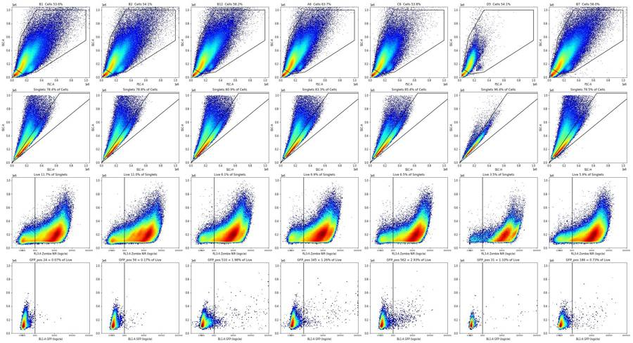
135
tool call · Write
{
"file_path": "/task/outputs/notes.md",
"content": "# Plate 230306 \u2013 gating notes (FlowKit 1.2.3, uncompensated, one gate tree for all 42 wells)\n\n## Gates\nAll bounds are in raw units and saved in `gates.xml`; `counts.csv` is `gate_sample` on the reloaded file. `gates_overview.png` shows the gates on seven wells.\n\n- **Cells** (PolygonGate, FSC-A vs SSC-A): vertices (45k,125k), (150k,50k), (330k,80k), (1000k,550k), (1000k,1000k), (330k,1000k), (120k,600k). The lower-left edge crosses the density saddle near (90k,90k) between the debris peak and the cell cloud on the pooled plate plot. The 1,000k top and right edges exclude the scale-maximum pile-up. The polygon deliberately keeps a small cluster at FSC-A ~265k / SSC-A ~140k: it is Zombie-negative and NCAM-bright (median VL1-A ~40,000 vs ~3,500 in the main cloud), i.e. the healthy neurons. NCAM was used only as a diagnostic, not gated.\n- **Singlets** (PolygonGate, SSC-H vs SSC-A): wedge (0,0), (1144k,1030k), (644k,1030k), i.e. SSC-A/SSC-H from 0.9 to 1.6. The main cloud peaks at a ratio of 1.18 and the Zombie-negative NCAM-bright cells at 1.33 (half-maximum 1.23\u20131.47); the aggregate tail starts above ~1.6.\n- **Live** (RectangleGate, RL3-A < 1,000, SSC-A 0\u20131,048,576): on Singlets, RL3-A vs SSC-A (logicle x) shows a Zombie-negative peak near 100\u2013200 and a large Zombie-stained population peaking at 8,000\u201318,000. Most events on this plate are Zombie-stained. The 1-D valley is shallow (350\u2013700 depending on display width), so the cut was put at the upper edge of the negative peak, which returns to baseline between 1,000 and 1,500 in every well. Checked on all 42 wells; the negative peak does not move between wells, while the stained peak does.\n- **GFP_pos** (RectangleGate, BL1-A \u2265 1,000, SSC-A 0\u20131,048,576): set on Live, BL1-A vs SSC-A, from the wells with the fewest GFP-bright events, B1 and B2 (also B4). In B1 the Live population has median 91, 99th percentile 447 and 99.9th percentile 883; 1,000 sits just above that edge and at the elbow where every well's negative tail meets the flat GFP-positive plateau. Background above the cut is 0.07% (B1) and 0.17% (B2) of Live.\n\nThe Live and GFP_pos cut-offs are judgement calls without controls. Moving Live from 1,000 to 1,500 raises Live by roughly 40%; GFP_pos is 0.07\u20132.9% of Live, so counts are tens to hundreds of events per well.\n\n## Quality control\nEach file was screened on: FCS metadata (voltages, threshold, date, labels, flow rate), total and gated counts, event rate in 1-s bins (median, CV, intervals below 50% or above 140% of the median, first and last 5 s), gated fractions and scatter medians in 5-s bins, and % of events at the scale maximum. Voltages match the notebook in all files.\n\n- **B7 \u2013 not usable (clog, high confidence):** rate unstable for the first ~35 s (312 to 17,476 ev/s), dip at 61 s, and scatter and Singlets fraction shift at 30 s.\n- **B8 \u2013 flagged (interrupted flow, low confidence):** run straight after B7; almost no events for 3 s, 60% rate to 8 s, surge to 15,200 ev/s at 9 s, stable after ~15 s. Gated fractions in the disturbed window match the rest, so it is probably recoverable with a time cut; B7 and B8 are each other's duplicates, so flagging both removes that condition.\n- **Kept, with caveats written in `flags.csv`:**\n - A1 was acquired at 200 \u00b5L/min for 46 s (all others 100 \u00b5L/min, ~98 s); steady, but lowest Singlets fraction.\n - D5 has 153,195 events (next lowest 578,214), 2,810 Live and 31 GFP_pos; steady rate, fractions match D6.\n - B3 has far more GFP-bright Live events than its duplicate B4 and the higher-dose wells B5/B6.\n - 13 wells taper to 36\u201363% of their median rate in the last 2 s without stopping (C3 is lowest); under 4% of events.\n- Scale-maximum pile-up is at most 1.18% of events (scatter, A1) and at most 106 events per file in BL1-A; no well was flagged for saturation.\n\n## Deviations\nNone from the population order, axes or gate shapes. Implementation choices within the strategy: fluorescence bounds are given in raw units rather than on a logicle axis, and the RL3-A lower bound and BL1-A upper bound are left open so off-scale events are included.\n"
}136
tool output
File created successfully at: /task/outputs/notes.md (file state is current in your context — no need to Read it back)
137
tool call · Bash
cd /task; python3 -I - <<'EOF' 2>&1 | grep -v Warn
import pandas as pd, flowkit as fk
c=pd.read_csv('outputs/counts.csv'); f=pd.read_csv('outputs/flags.csv'); lay=pd.read_csv('inputs/plate_layout.csv')
print(c.shape, list(c.columns), c.population.value_counts().to_dict())
print(f.shape, list(f.columns), f.usable.value_counts().to_dict(), f.reason_category.value_counts().to_dict())
assert list(f.file)==list(lay.file) and list(f.well)==list(lay.well)
assert set(c.file)==set(lay.file) and c.pct_of_parent.between(0,100).all() and c['count'].dtype.kind=='i'
assert ((f.usable=='yes')==(f.reason_category=='ok')).all()
print(f[f.usable=='no'].evidence.str.extract(r'(confidence: \w+)$')[0].tolist())
g=fk.parse_gating_xml('outputs/gates.xml'); print(g.get_gate_ids())
for n,p in g.get_gate_ids():
gt=g.get_gate(n); print(n,type(gt).__name__,[(d.id,d.compensation_ref,d.transformation_ref,getattr(d,'min',None),getattr(d,'max',None)) for d in gt.dimensions])
# recheck two wells straight from the saved file
for w in ('B7','D5'):
s=fk.Sample(f'inputs/raw/Serotype panel_2_Rep2_Group_{w}.fcs'); r=g.gate_sample(s).report.set_index('gate_name')['count']
print(w, s.event_count, r.to_dict(), c[c.well==w]['count'].tolist())
EOF
wc -w outputs/notes.md; ls -la outputs138
tool output
(168, 6) ['file', 'well', 'population', 'count', 'parent_population', 'pct_of_parent'] {'Cells': 42, 'Singlets': 42, 'Live': 42, 'GFP_pos': 42}
(42, 5) ['file', 'well', 'usable', 'reason_category', 'evidence'] {'yes': 40, 'no': 2} {'ok': 40, 'clog_or_interrupted_flow': 2}
['confidence: high', 'confidence: low']
[('Cells', ('root',)), ('Singlets', ('root', 'Cells')), ('Live', ('root', 'Cells', 'Singlets')), ('GFP_pos', ('root', 'Cells', 'Singlets', 'Live'))]
Cells PolygonGate [('FSC-A', 'uncompensated', None, None, None), ('SSC-A', 'uncompensated', None, None, None)]
Singlets PolygonGate [('SSC-H', 'uncompensated', None, None, None), ('SSC-A', 'uncompensated', None, None, None)]
Live RectangleGate [('RL3-A', 'uncompensated', None, None, 1000.0), ('SSC-A', 'uncompensated', None, 0.0, 1048576.0)]
GFP_pos RectangleGate [('BL1-A', 'uncompensated', None, 1000.0, None), ('SSC-A', 'uncompensated', None, 0.0, 1048576.0)]
B7 954909 {'Cells': 553601, 'Singlets': 434453, 'Live': 25519, 'GFP_pos': 186} [553601, 434453, 25519, 186]
D5 153195 {'Cells': 82848, 'Singlets': 79877, 'Live': 2810, 'GFP_pos': 31} [82848, 79877, 2810, 31]
686 outputs/notes.md
total 992
drwxr-xr-x 2 root root 4096 Nov 10 19:30 .
drwxr-xr-x 5 root root 4096 Nov 10 19:14 ..
-rw-r--r-- 1 root root 11244 Nov 10 19:24 counts.csv
-rw-r--r-- 1 root root 346942 Nov 10 19:30 event_rate_over_time.png
-rw-r--r-- 1 root root 18626 Nov 10 19:30 flags.csv
-rw-r--r-- 1 root root 3389 Nov 10 19:24 gates.xml
-rw-r--r-- 1 root root 612830 Nov 10 19:30 gates_overview.png
-rw-r--r-- 1 root root 4132 Nov 10 19:30 notes.md140
tool call · Bash
cd /task; python3 -I - <<'EOF'
p='outputs/notes.md'; s=open(p).read()
rep=[
("All bounds are in raw units and saved in `gates.xml`; `counts.csv` is `gate_sample` on the reloaded file. `gates_overview.png` shows the gates on seven wells.",
"Bounds are in raw units, saved in `gates.xml`; `counts.csv` is `gate_sample` on the reloaded file. `gates_overview.png` shows the gates on seven wells."),
(" The polygon deliberately keeps a small cluster at FSC-A ~265k / SSC-A ~140k: it is Zombie-negative and NCAM-bright (median VL1-A ~40,000 vs ~3,500 in the main cloud), i.e. the healthy neurons. NCAM was used only as a diagnostic, not gated.",
" The polygon keeps a small cluster at FSC-A ~265k / SSC-A ~140k that is Zombie-negative and NCAM-bright (median VL1-A ~40,000 vs ~3,500 in the main cloud), i.e. healthy neurons. NCAM was a diagnostic only, not gated."),
("The main cloud peaks at a ratio of 1.18 and the Zombie-negative NCAM-bright cells at 1.33 (half-maximum 1.23–1.47); the aggregate tail starts above ~1.6.",
"The main cloud peaks at ratio 1.18 and the Zombie-negative NCAM-bright cells at 1.33; the aggregate tail starts above ~1.6."),
("The 1-D valley is shallow (350–700 depending on display width), so the cut was put at the upper edge of the negative peak, which returns to baseline between 1,000 and 1,500 in every well. Checked on all 42 wells; the negative peak does not move between wells, while the stained peak does.",
"The 1-D valley is shallow (350–700 depending on display width), so the cut sits at the upper edge of the negative peak, which returns to baseline at 1,000–1,500 on the pooled plate and in the per-well plots. The negative peak does not move between wells; the stained peak does."),
("Moving Live from 1,000 to 1,500 raises Live by roughly 40%; GFP_pos is 0.07–2.9% of Live, so counts are tens to hundreds of events per well.",
"Moving Live from 1,000 to 1,500 raises Live counts by about 25–50%. GFP_pos is 0.07–2.9% of Live, i.e. tens to hundreds of events per well."),
("Each file was screened on: FCS metadata (voltages, threshold, date, labels, flow rate), total and gated counts, event rate in 1-s bins (median, CV, intervals below 50% or above 140% of the median, first and last 5 s), gated fractions and scatter medians in 5-s bins, and % of events at the scale maximum. Voltages match the notebook in all files.",
"Each file was screened on FCS metadata, total and gated counts, event rate in 1-s bins (median, CV, intervals below 50% or above 140% of the median, first and last 5 s), gated fractions and scatter medians in 5-s bins, and % of events at the scale maximum. Voltages match the notebook in all files."),
(" Gated fractions in the disturbed window match the rest, so it is probably recoverable with a time cut; B7 and B8 are each other's duplicates, so flagging both removes that condition.",
" Gated fractions in the disturbed window match the rest, so it is probably recoverable with a time cut. B7 and B8 are each other's duplicates, so flagging both removes that condition."),
]
for a,b in rep:
assert a in s, a[:40]; s=s.replace(a,b)
open(p,'w').write(s)
EOF
wc -w outputs/notes.md; grep -n '^## ' outputs/notes.md141
tool output
666 outputs/notes.md 3:## Gates 13:## Quality control 25:## Deviations
143
tool call · Read
{
"file_path": "/task/outputs/notes.md"
}144
tool output
1 # Plate 230306 – gating notes (FlowKit 1.2.3, uncompensated, one gate tree for all 42 wells) 2 3 ## Gates 4 Bounds are in raw units, saved in `gates.xml`; `counts.csv` is `gate_sample` on the reloaded file. `gates_overview.png` shows the gates on seven wells. 5 6 - **Cells** (PolygonGate, FSC-A vs SSC-A): vertices (45k,125k), (150k,50k), (330k,80k), (1000k,550k), (1000k,1000k), (330k,1000k), (120k,600k). The lower-left edge crosses the density saddle near (90k,90k) between the debris peak and the cell cloud on the pooled plate plot. The 1,000k top and right edges exclude the scale-maximum pile-up. The polygon keeps a small cluster at FSC-A ~265k / SSC-A ~140k that is Zombie-negative and NCAM-bright (median VL1-A ~40,000 vs ~3,500 in the main cloud), i.e. healthy neurons. NCAM was a diagnostic only, not gated. 7 - **Singlets** (PolygonGate, SSC-H vs SSC-A): wedge (0,0), (1144k,1030k), (644k,1030k), i.e. SSC-A/SSC-H from 0.9 to 1.6. The main cloud peaks at ratio 1.18 and the Zombie-negative NCAM-bright cells at 1.33; the aggregate tail starts above ~1.6. 8 - **Live** (RectangleGate, RL3-A < 1,000, SSC-A 0–1,048,576): on Singlets, RL3-A vs SSC-A (logicle x) shows a Zombie-negative peak near 100–200 and a large Zombie-stained population peaking at 8,000–18,000. Most events on this plate are Zombie-stained. The 1-D valley is shallow (350–700 depending on display width), so the cut sits at the upper edge of the negative peak, which returns to baseline at 1,000–1,500 on the pooled plate and in the per-well plots. The negative peak does not move between wells; the stained peak does. 9 - **GFP_pos** (RectangleGate, BL1-A ≥ 1,000, SSC-A 0–1,048,576): set on Live, BL1-A vs SSC-A, from the wells with the fewest GFP-bright events, B1 and B2 (also B4). In B1 the Live population has median 91, 99th percentile 447 and 99.9th percentile 883; 1,000 sits just above that edge and at the elbow where every well's negative tail meets the flat GFP-positive plateau. Background above the cut is 0.07% (B1) and 0.17% (B2) of Live. 10 11 The Live and GFP_pos cut-offs are judgement calls without controls. Moving Live from 1,000 to 1,500 raises Live counts by about 25–50%. GFP_pos is 0.07–2.9% of Live, i.e. tens to hundreds of events per well. 12 13 ## Quality control 14 Each file was screened on FCS metadata, total and gated counts, event rate in 1-s bins (median, CV, intervals below 50% or above 140% of the median, first and last 5 s), gated fractions and scatter medians in 5-s bins, and % of events at the scale maximum. Voltages match the notebook in all files. 15 16 - **B7 – not usable (clog, high confidence):** rate unstable for the first ~35 s (312 to 17,476 ev/s), dip at 61 s, and scatter and Singlets fraction shift at 30 s. 17 - **B8 – flagged (interrupted flow, low confidence):** run straight after B7; almost no events for 3 s, 60% rate to 8 s, surge to 15,200 ev/s at 9 s, stable after ~15 s. Gated fractions in the disturbed window match the rest, so it is probably recoverable with a time cut. B7 and B8 are each other's duplicates, so flagging both removes that condition. 18 - **Kept, with caveats written in `flags.csv`:** 19 - A1 was acquired at 200 µL/min for 46 s (all others 100 µL/min, ~98 s); steady, but lowest Singlets fraction. 20 - D5 has 153,195 events (next lowest 578,214), 2,810 Live and 31 GFP_pos; steady rate, fractions match D6. 21 - B3 has far more GFP-bright Live events than its duplicate B4 and the higher-dose wells B5/B6. 22 - 13 wells taper to 36–63% of their median rate in the last 2 s without stopping (C3 is lowest); under 4% of events. 23 - Scale-maximum pile-up is at most 1.18% of events (scatter, A1) and at most 106 events per file in BL1-A; no well was flagged for saturation. 24 25 ## Deviations 26 None from the population order, axes or gate shapes. Implementation choices within the strategy: fluorescence bounds are given in raw units rather than on a logicle axis, and the RL3-A lower bound and BL1-A upper bound are left open so off-scale events are included. 27
146
tool call · Edit
{
"replace_all": false,
"file_path": "/task/outputs/notes.md",
"old_string": "B7 and B8 are each other's duplicates, so flagging both removes that condition.",
"new_string": "By plate position B7 and B8 are the two 5e3 duplicates of one serotype, so flagging both removes that condition."
}147
tool output
The file /task/outputs/notes.md has been updated successfully. (file state is current in your context — no need to Read it back)
148
agent
All 42 wells are gated and the deliverables are written. `gates.xml` reloads with `parse_gating_xml`, and `counts.csv` comes from `gate_sample` on the reloaded strategy.
## Gates (one tree, raw units, uncompensated)
| Population | Gate | Basis |
|---|---|---|
| Cells | polygon on FSC-A vs SSC-A | lower-left edge at the debris/cell density saddle near (90k, 90k); top and right edges at 1,000k exclude the scale-maximum pile-up |
| Singlets | wedge on SSC-H vs SSC-A, ratio 0.9–1.6 | main cloud peaks at 1.18, healthy neurons at 1.33; aggregates start above about 1.6 |
| Live | RL3-A < 1,000 | upper edge of the Zombie-negative peak |
| GFP_pos | BL1-A ≥ 1,000 | just above the negative edge in B1 and B2, the wells with the fewest GFP-bright events (B1 99.9th percentile is 883) |
- **Most events are Zombie-stained.** Live is only 3.5–14.9% of Singlets. The healthy neurons are a small Zombie-negative, NCAM-bright cluster (FSC-A ~265k, SSC-A ~140k) beside the main cloud; the Cells polygon is drawn to keep it. NCAM was used only to locate that cluster, not gated.
- **The Live cut-off is the least certain choice.** The valley is shallow, and moving the cut from 1,000 to 1,500 raises Live counts by about 25–50%.
- **GFP_pos is small everywhere.** It is 0.07–2.9% of Live, between 24 and 562 events per well.
## Flags
| Well | Usable | Reason | Confidence |
|---|---|---|---|
| B7 | no | clog: rate swings from 312 to 17,476 events/s over the first ~35 s, dip at 61 s, scatter shifts at 30 s | high |
| B8 | no | interrupted flow at the start, run straight after B7: almost no events for 3 s, surge to 15,200 events/s at 9 s, stable after ~15 s | low |
The other 40 wells are marked usable. Four caveats are written into their evidence:
- **A1** was acquired at 200 µL/min for 46 s; every other well ran at 100 µL/min for about 98 s. The rate is steady, but it has the lowest Singlets fraction.
- **D5** has 153,195 events (next lowest 578,214), 2,810 Live and 31 GFP_pos. The rate is steady and its fractions match D6.
- **B3** has far more GFP-bright Live events than B4 and the higher-dose wells B5/B6, which by plate position look like the same serotype.
- **13 wells** taper to 36–63% of their median rate in the last 2 s without stopping.
B8 is the call you may want to overrule. Its gated fractions in the disturbed first 15 s match the rest of the run, so it is probably recoverable with a time cut. By plate position B7 and B8 look like the two 5e3 duplicates of one serotype, so flagging both leaves that condition with no data. I flagged it because no time cut is possible within the one-gate-per-population rule.
There are no deviations from the gating strategy's order, axes or shapes.
Files are in `/task/outputs/`:
- counts.csv
- flags.csv
- notes.md
- gates.xml
- gates_overview.png
- event_rate_over_time.png
final result
All 42 wells are gated and the deliverables are written. `gates.xml` reloads with `parse_gating_xml`, and `counts.csv` comes from `gate_sample` on the reloaded strategy. ## Gates (one tree, raw units, uncompensated) | Population | Gate | Basis | |---|---|---| | Cells | polygon on FSC-A vs SSC-A | lower-left edge at the debris/cell density saddle near (90k, 90k); top and right edges at 1,000k exclude the scale-maximum pile-up | | Singlets | wedge on SSC-H vs SSC-A, ratio 0.9–1.6 | main cloud peaks at 1.18, healthy neurons at 1.33; aggregates start above about 1.6 | | Live | RL3-A < 1,000 | upper edge of the Zombie-negative peak | | GFP_pos | BL1-A ≥ 1,000 | just above the negative edge in B1 and B2, the wells with the fewest GFP-bright events (B1 99.9th percentile is 883) | - **Most events are Zombie-stained.** Live is only 3.5–14.9% of Singlets. The healthy neurons are a small Zombie-negative, NCAM-bright cluster (FSC-A ~265k, SSC-A ~140k) beside the main cloud; the Cells polygon is drawn to keep it. NCAM was used only to locate that cluster, not gated. - **The Live cut-off is the least certain choice.** The valley is shallow, and moving the cut from 1,000 to 1,500 raises Live counts by about 25–50%. - **GFP_pos is small everywhere.** It is 0.07–2.9% of Live, between 24 and 562 events per well. ## Flags | Well | Usable | Reason | Confidence | |---|---|---|---| | B7 | no | clog: rate swings from 312 to 17,476 events/s over the first ~35 s, dip at 61 s, scatter shifts at 30 s | high | | B8 | no | interrupted flow at the start, run straight after B7: almost no events for 3 s, surge to 15,200 events/s at 9 s, stable after ~15 s | low | The other 40 wells are marked usable. Four caveats are written into their evidence: - **A1** was acquired at 200 µL/min for 46 s; every other well ran at 100 µL/min for about 98 s. The rate is steady, but it has the lowest Singlets fraction. - **D5** has 153,195 events (next lowest 578,214), 2,810 Live and 31 GFP_pos. The rate is steady and its fractions match D6. - **B3** has far more GFP-bright Live events than B4 and the higher-dose wells B5/B6, which by plate position look like the same serotype. - **13 wells** taper to 36–63% of their median rate in the last 2 s without stopping. B8 is the call you may want to overrule. Its gated fractions in the disturbed first 15 s match the rest of the run, so it is probably recoverable with a time cut. By plate position B7 and B8 look like the two 5e3 duplicates of one serotype, so flagging both leaves that condition with no data. I flagged it because no time cut is possible within the one-gate-per-population rule. There are no deviations from the gating strategy's order, axes or shapes. Files are in `/task/outputs/`: - counts.csv - flags.csv - notes.md - gates.xml - gates_overview.png - event_rate_over_time.png